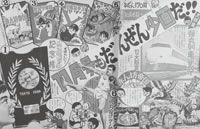
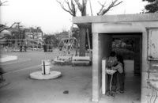
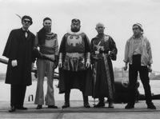
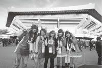
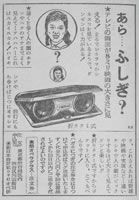
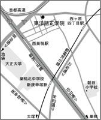
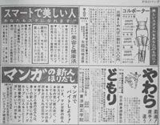
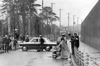

| 60年代 郷愁の東京 | |
| 本橋 信宏 | |
| 主婦の友社 (2010) | |
主婦の友社
60 年代
郷愁の東京
本橋信宏
60
年代 郷愁の東京 目 次
一
東京オリンピックの残照
二
トトロの森と焼き団子、たっちゃん池の謎
三
吉展ちゃん誘拐事件のあの日をふりかえって。
四
花園神社、母子２代のドラマ
五
名曲神田川にまつわる隠されたエピソードを探る。
六
ブラック・デビルが昇った芦花公園ガスタンク
七
忘れ去られた東京の記憶
八
武道館で別れて38
年。あれからきみはどうしていたんだ。
九
東京タワーが砕け散った夜
十
１９６３年夏、大久保の赤塚不二夫のアパートを追って...。
十一
サンデー、マガジン、明星に載っていた怪しげな広告を追って
十二
赤坂ＭＵＧＥＮとキャロル
十三
60
年代ショービズはキャンティの緑色したスパゲティから始まった
十四
平和島温泉、ジングルベルを歌う14
歳の吉永小百合
十五
晴天の午前、42
年前の驟雨に起きた３億円事件の謎を思う
十六
東大安田講堂でポルシェと帝大下水を想う。
十七
１Ｑ７２・・・・鬼子母神の美少女
一 東京オリンピックの残照
いつも後ろ向きで生きていたい。
なつかしさは、小学生のころからずっと私の心の糧になっている。
そうだ。時間を超えた小旅行に出かけよう。
舞台は東京。
私の感傷旅行に付き添ってくれることになったのは、主婦の友社の加藤紳一郎編集長と、廃墟の写真集を出した、幻想的な写真を撮らせたら右に出る者はいない岡戸雅樹カメラマン。私が要望するわがままな行き先に、ふたりは面白がって同行する。遠い昔を目撃したその地を訪れ、記憶を掘り起こすのだ。
まず私たちが訪れたのは都心の一大緑地、代々木公園だった。
まるで軽井沢のコテージを思わせる木造のしゃれた建物が公園の片隅に忘れ去られたかのように建っている。ワシントンハイツという米軍の住居地域だったこの地は、昭和39
年（１９６４年）東京オリンピック期間中、外国人選手が暮らす選手村になった。
いま、私たちの前にひっそりたたずむ別荘風の建物は、オランダ選手団が宿舎にしていた当時のままの建物だ。窓ガラスから中をのぞくと、最近までこの建物が実用的に使われていたかのような生活感が残っている。選手村はオリンピックが幕を閉じた後はいまの緑豊かな代々木公園になった。
代々木公園に残された東京オリンピック選手村のオランダ選手団宿舎。木立にたたずむ姿は軽井沢を思わせる。
日本人が抱くオリンピックへの特別な思いは、東京オリンピックの記憶があまりにも強烈だったからだろう。
男子マラソンで円谷幸吉選手が国立競技場にアベベにつぎ２位で入ってきたときの競技場の興奮と、後ろからひたひたと迫ってきたイギリスのヒートリーに遂にトラックで抜かれたデッドヒート。判官贔
屓
である日本人にとって、円谷選手の３位は歴史的な銅メダルとなった。
円谷選手は、マラソンでは第３の男と言われるダークホースで、メダルを期待されていた君原健二選手は８位に終わった。
ドラマはつづく。
メキシコ大会目前の１９６８年１月９日、円谷選手は頸動脈をカミソリで切り、みずから命を閉じてしまう。体の故障、結婚を反対されていたこと、まわりから期待されたことへの重圧、孤立した上での自死だった。
オリンピック直前、昭和39
年９月に発売された少年画報。フォーリーブスの一員になる前の江木俊夫が聖火ランナーになっている。子どもたちはトーチ（たいまつ）に見立てた薪をもって走り回っていた。
君原選手がメキシコオリンピックで見事復活し銀メダルとなったのも、銅と銀の織りなすドラマであった。
オリンピックにドラマが生まれるのも、本来は敗者である２位、３位のアスリートに、銀、銅のメダルを授与した点であろう。
東京オリンピック開催の１９６４年、私は小学２年生であった。
この春は思い出深い。
４月に学校のブランコから後ろ跳びしたところ着地に失敗し、左手首を骨折、１ヶ月近く入院するはめになった。べつにオリンピックでウルトラＣを成功させた日本選手の先をいったわけではない。骨折部分を手術して接合し、このときの縫った４針の痕はかすかに残っている。
オリンピックはすでに春から盛り上がっていた。

付録の砲丸投げゲーム盤は、縁側で組み立てて２回遊んだら壊れて二度と使えなかった！
私がとっていた少年サンデーは毎週、オリンピック特集を載せ、この大会から正式種目になった柔道は金メダル続出確実といった記事だった。
少年画報、少年といった月刊誌の付録も、オリンピック物ばかりで、少年画報の付録についたオリンピック記念盾、オリンピック砲丸投げゲームといったやつを廊下で組み立てて熱中したが、この時代の付録はボール紙でできていたために、２回遊んだら壊れてしまった。
開会式前日。台風が接近し、天気は最悪、雨が降っていた。
そしていよいよ大会当日10
月10
日土曜日。
前日の悪天候が嘘のように晴れ渡り、国立霞ヶ丘陸上競技場で盛大な開会式がおこなわれた。
整然とならび行進する各国選手団。日本人がはじめてリアルタイムで目撃する地球規模のイベントだ。青空にはブルーインパルスが五輪マークを描いた。
開会式翌日から一斉に競技が開始された。
昼間からはじまった各競技、水泳やボート、レスリング。なかなか日本がメダルをとれないような気がしたが、その日の夜、重量挙げで三宅義信が金メダルをとった。
諏訪町会国旗掲揚塔。高田馬場明治通り交差点付近に残る東京オリンピック閉会式10
月24
日の日付を刻んだ国旗掲揚塔。街も人も高揚していたのだ！
なぜか試合会場は前にしつらえた壇上でバーベルを上げていたので、それがかえってドラマティックな効果をあげた。この会場は本来は歌謡ショーなどをおこなう渋谷公会堂（現在、渋谷C.C.Lemonホール）だったので、ステージで重量挙げがおこなわれたわけだ。オリンピックのために急遽、東京中に施設がつくられたが、それでもなお建っている施設を代用しなければならなかったのだろう。
国立競技場の外壁に残る東京オリンピックメダリストたちのレリーフ。
オリンピックを記念していまも残る原宿駅近くの五輪橋。欄干にある蓋の中には、何か記念の品々が入っていそうな気がする。
お家芸の柔道は開催期間最後のほうに用意され、無差別級ではオランダのヘーシンクが金メダルをさらってしまった。これ以来、ヘーシンクといえば、デストロイヤー、ブラッシーとならび、そびえ立つ３大悪役外国人となった。
東京オリンピックは開会式の晴れがましさがあまりにも有名だけれど、閉会式には各国選手が入り乱れて、他国の選手を肩車したり、腕を組んだりして、混沌とした演出がかえって開会式以上に感動的だった。このころの日本人は公式の場でこんな崩した演出というのを見るのがはじめてだったのだ。
ドラマはオリンピックが終わってからもつづいた。
市川崑監督による記録映画「東京オリンピック」が公開され、これにオリンピック担当大臣河野一郎（元衆議院議長河野洋平の父、河野太郎衆議院議員の祖父）が、記録映画としては難解過ぎる、と噛みつき、スポーツに政治が介入したと物議を醸したものだ。
学校中でこの映画を見るのが全国的な行事となり、私も鑑賞した。選手のドアップの連続で、よくも悪くも懲りすぎて、記録映画としてはたしかに違和感があった。
開会式の10
月10
日は、体育の日となって国民の祝日となり、いまでも東京の各地にある国旗掲揚塔の建設日をチェックしてみると、１９６４年10
月10
日、あるいは閉会式の10
月24
日という日付を残している。
代々木公園と道を挟んだＮＨＫそばの敷地には東京オリンピックの夢の跡が残されている。
あかねさす昼の公園に思いは馳せる。
公園に唯一残されたオランダ選手団が宿泊した建物で、おそらくはあのヘーシンクもここで金メダルの余韻にひたっていたのだろう。
コテージ風の建物がひだまりに浮かび、ふと、都心にいることを忘れされてくれる。
高揚は翌年になってもつづいていた。大会終了後の１９６５年、代々木公園に建てられた記念碑。選手村配置図、メキシコ通り、メルボルン通り、ヘルシンキ通りといったオリンピックがらみの道路名が刻まれている。
二 トトロの森と焼き団子、たっちゃん池の謎
はちこく山へ行ったこと
ぼくはずうっとまえの日ようびに、おてんきがよかったので、たかちゃんとたあちゃんとひさむねちゃんと、はちこく山にいきました。田んぼは、いねがきいろくなってきれいでした。上のほうに行ってみると、しょうぐんづかがあって大きな石が立っていて、むずかしいじがたくさんかいてありました。ぼくはなんだろうと思いました。
実家の戸棚を掘り起こしていたら、奇跡的に小学２年生の作文を発見した。
地元では八国山と呼ばれている丘のような低地の山を冒険したときの話だ。
八国山というのは私が住んでいた埼玉県所沢市と東京都東村山市の県境にある東西に細長い緑地であり、狭山丘陵の東端に位置する。
昔、この山から８つの国、上野・下野・常陸・安房・相模・駿河・信濃・甲斐国を望むことができたことから八国山の名がついた。
狭山丘陵は武蔵野台地のほぼ中央に位置する、平野に浮いた緑の孤島のようであり、西側には狭山湖、多摩湖、西武園ゆうえんち、西武ドームがある。
八国山は頂を県境にして、北側が所沢、南側が東村山で、新田義貞が鎌倉攻めしたとき合戦場となり、東京都側の田んぼだった地帯は久米川古戦場跡があり、いまでは住宅地になっている。将軍塚というのは、新田義貞の鎌倉攻めの際、ここに陣を張ったことからその名がついた。
「むずかしいじ」というのは、新田義貞の鎌倉攻めの記録を彫ったものだった。
大岡昇平「武蔵野夫人」にも、夫人がこの地を訪れる描写が出てくる。
八国山を囲むように昔はここに大谷田んぼがあり、遠くの私の家でも夜になるとカエルの合唱が届いたものだ。
田んぼにゆるいカーブを描く丘陵、空を結ぶ鉄塔。
こんな景色で真っ先に思い浮かぶのは「となりのトトロ」である。
あの映画を見ていると、昭和30
年代の八国山を思い出す。サツキとメイの母の入院する病院が七国山病院であって、八国山を連想させる。
鉄塔と山の上を走る送電線の景色は、八国山のもうひとつの味わいであり、たまたま私たちが今回、八国山の鉄塔をチェックしたところ、鉄骨に「昭和14
年11
月」の日付のあるプレートを発見した。
〈岡部境線 前久保─武蔵境１０２（号）昭和14
年11
月 ＪＲ東日本〉
プレート自体は新しく、施工者はＪＲ東日本。
昭和14
年にこの地に建てられ、現在は何代目かなのだろう。
八国山の将軍塚。この地から新田義貞が合戦の采配をふるったとされる。小学２年の私の作文。本文のつづき。〈「どこでお昼を食べようか」といいました。いろんなところをさがしてやっとみつけました。みんな、にこにこしながらたべました。ぼくは、パンとソーセージとぶどうをもってきました。おなかがすいたのでとてもおいしかったです。〉
夕陽に暮れなずむ多摩湖。取水塔と湖は、東村山市のシンボルになっている。
昭和14
年というと、太平洋戦争勃発まであと２年、きな臭い時代であり、岡部境線の鉄塔を追うと、昭和14
年施工が多く、軍事用として電力を張り巡らせる国策の匂いがしてくる。
鉄塔は施工者がいくつかあって、八国山にはこのＪＲ東日本の岡部境線の他に、電源開発の只見幹線もそびえている。
電源開発とは、全国に発電・送電網を持っている電力卸売会社だ。
私たちが普段何気なく見ている鉄塔も、オーナーがそれぞれ異なるというのも面白い。
鉄塔マニアには、スタイルの違いがまたいいらしいんだが、どんなスタイルにしろ八国山には鉄塔がよく似合う。
実家の２階西側の窓からは八国山が一望でき、夕方になると丘陵雲という刷毛で描いたようなあかね色の雲が刻々と姿を変えていく。
これがまた見事な色合いで、私の好きな景色のひとつだ。
東村山から所沢は関東ローム層で井戸も深く掘らないと水源に当たらないことから、水田が少なく、八国山の大谷田んぼはその少ない水田のひとつだった。
水田が少ない代わりに畑が耕され、小麦を利用した団子と手打ちうどんがこの辺の名物になった。東村山から所沢にかけて、商店街の軒先でしょう油をつけた団子を焼く香ばしい薫りが漂ってくる。
大人になるまで私は、焼き団子はどこでも食べられるものだとばかり思っていた。
八国山の鉄塔。岡部境線。プレートには昭和14
年11
月ＪＲ東日本の文字が。鉄塔と雑木林のコントラストは、武蔵野の美景のひとつだ。
20
代のころ、つきあっていた神奈川生まれの彼女が食欲をそそるしょう油の焼けた匂いにひかれ、生まれてはじめての団子を、おいしそうにほおばっていた。
東村山というと、志村けんだ。
私の実家の数軒隣の家が実は志村けんの親戚で、私が６歳くらいのとき、学生服を着た坊主頭の中学生が時々遊びに来ていて、一緒に遊んだことがあった。あの中学生が志村けんだった（と思う）。
普段から学生服を着て遊んで、冗談ばかり言っていたので、印象に残っているのだ。
＊
加藤編集長、岡戸カメラマン、私の３名は、緑に覆われた八国山を違うルートで登り、頂にそって歩いていくと、西武園ゆうえんちに出て、さらに多摩湖、狭山湖にたどり着いた。
多摩湖は東京都東大和市にあり、正式名称は村山貯水池、道路をはさんで２つの湖に分かれている。
所沢のほうの湖は、狭山湖、正式名称を山口貯水池と呼ぶ。
２つの湖は場所が近く、面積も形も風景も、おしゃれな取水塔も似ているので、見分けがつかず混同されるときがある。
多摩湖の道路で区切られた半分（村山上貯水池）は、大正13
（１９２４）年３月31
日に竣工し、もう半分（村山下貯水池）は、昭和２（１９２７）年３月31
日に竣工した。
多摩湖そっくりな狭山湖（山口貯水池）は、昭和９（１９３４）年３月に竣工した。
２つの湖は、昭和初期、東京都の人口が急増したために造成された水道用の人造湖であり、東京都水道局水源管理事務所が管理している。
どちらの湖も、オオタカや貴重種の野鳥が飛び交い、この近隣の小学生なら一度は遠足や写生大会で来た経験をもつ。あまり大きな声では言えないのだが（言ってるって）、父方の祖父と釣り糸を垂らしたこともあった。
私と加藤編集長、岡戸カメラマンは多摩湖を一望した。
最近、堤防付近を全面改修したらしく、見違えるような公園になっている。
西の空にゆっくりと夕日が沈みかけ、オレンジ色に湖面が光り、心の中まで染み通ってくる。
堤防を歩いていると、黒い不思議な異物を発見。
説明板によると――。
膨大な水を溜める堤体（堤防）は昭和２年に完成した。東京都民の水の供給元として、蒼の水面と緑の森がはえる、あらたな観光地として多摩湖はその歴史を歩んできたが、時は太平洋戦争へと突き進む。
親柱といって、堤防を造成するときの大元になる巨大な心棒があり、この親柱は堤防のまさにキモ、ここを爆撃で破壊されたら堤防が決壊し、大洪水に見舞われるとあって、親柱を守れと、爆弾が落ちても頑丈に守られる耐弾層と呼ばれるコンクリート層で親柱を覆い、上半分をコールタールで黒く塗った。
親柱は、積み木を重ねてひとりずつ抜き取って、倒れるまで繰り返すジェンカというゲームの、一番キモになる積み木みたいなものなのだろう。
堤防の急所でもある親柱という不思議な心棒を感慨深く観察した後、私たちは湖面にたたずむ取水塔を鑑賞した。
昭和初期の建造物というのは時代がまだ余裕があったのだろうが、ヨーロッパ・ルネッサンス様式を取り入れて、どれも芸術品のようだ。
たかが、といっちゃ怒られるが、水をくみ上げる取水塔までこんなルネッサンス様式のモダンなデザインにしている。昭和５年建設の野方の配水塔も、やはりヨーロッパ寺院風の厳かなデザインを誇っている。
昔は物が溢れた時代ではなく、その分、物に対するこだわりが強く、凝り方がすごく、贅沢なデザインと材質だ。東京の建造物のなかでもこの取水塔の美しさは第１位であろう。
もうひとつ、多摩湖のすぐ脇にある、階段状の用水路がある。
これは「十二段の滝」と呼ばれ、大雨が降り貯水池が満杯になると、余水吐きといって、水量を調整するためにこの十二段の滝から外に流していったという。階段状になっているのは、急激な水流にならないためだ。滝となって流れ落ちる様は、見事だっただろう。いまではほとんどこの滝も使用されていないようで、雑草が茂り、水もちょろっと流れているだけだ。
多摩湖の水量を調整する余水吐き、十二段の滝。昭和２年、完成記念の際に発行された「東洋唯一大公園村山貯水池絵葉書」の１枚。
余水吐き、十二段の滝の現在。水量調整は他の手段でおこなっているのか、いまではほとんど使用されていない様子だ。草むす水路が味わい深い。
滝の下にある滝見橋は大正十五年六月竣工となっている。
年代から推測するに、ちょうど多摩湖が造成されるときにできた由緒ある橋だった。
すぐ近くにある大きな池は宅
部
池
。
多摩湖を造成する際に、もともとあった小さな池を大きくして農業用治水池にした。
地元ではこの宅部池をなぜかたっちゃん池と呼んでいる。
私の家からはかなり距離があるのだが、たっちゃん池の名は知っていた。
今度の散策でこの池がたっちゃん池と呼ばれる理由がわかった。
話は古く、大正14
（１９２５）年７月、多摩湖造成中のころ、工事をしていた作業員たちが昼休みをとっていた。
地元の子ども、たっちゃんが妹と池に遊びに来ていた。家に帰ろうとしたら、お兄ちゃんの姿が見えない。妹は寂しくなって泣き出した。
作業員が気づき、池の中で溺れているのかもしれないと、２人が池に飛び込んだのだが、潜ったまま浮かんでこない。
大騒ぎになり、作業員たちが探したところ、たっちゃんを含め３名は池底で発見され、亡くなっていた。
それ以来、この池は鎮魂の意を持ってたっちゃん池と呼ばれるようになった。
悲しい話だ。いつしかたっちゃんの声が聞こえるといった噂が流れたりしたらしいが、さすがにいまでは名前の由来を知る人も少なく、声が聞こえたという話も聞かない。
私たちは夕日を背に、落ち葉を踏む音を耳にしながらまた八国山をめざし、歩いていった。
いつしか私は、しょうぐんづかまでたんけんした小学２年生にもどっていた。
三 吉展ちゃん誘拐事件のあの日をふりかえって。
昭和38
年（１９６３年）３月31
日夕刻、台東区入谷の公園で友だちと水鉄砲遊びをしていた４歳の男の子、村越吉展ちゃんが行方不明になった。
失踪現場となった東京下町の入谷南公園は、戦後最大の誘拐事件、吉展ちゃん事件の現場として人々の記憶に残ることになる。
付近一帯の聞き込み捜査の結果、吉展ちゃんと一緒に水鉄砲遊びをしていた４歳年上の近所の男の子が犯人らしき男を最後に目撃しているのをつかんだ。
失踪から２日後、東北なまりの中年男らしき人物から、身代金50
万円を要求する電話が吉展ちゃん宅にかかった。犯人からの電話は計９回かかり、父親が用意したテープレコーダーのおかげで犯人の声が録音できた。
――録音された犯人の声の一部。
「イヤー。エー。今日ハネ、アノー、ソノー、マズエガラ、渡セネーガラネ。ンダカラネ、エー、アドデマダ、指定（シテー）スル」
「エー、アノ、新聞紙（シンブンガミ）ニクルンデネ、少シ、グヂャグヂャニ、品（シナ）ヲツツンデカラネ」
事件は途中から誘拐された児童の安否を気遣い、報道協定が結ばれ、新聞、ラジオ、テレビの報道が控えられた。
４月７日午前１時25
分、犯人からの電話で、吉展ちゃん宅からまっすぐ先の昭和通りに突き当たった所にある自動車工場品川自動車に止めてある車の荷台に片方の靴を置いてあるので、それと引き替えに現金50
万円を置け、という指示だった。
不意を突かれた捜査陣は、急遽、被害者宅の工務店で働いていた親戚の青年が軽トラックを運転し、４００メートル離れた品川自動車まで走らせることになった。
荷台には、刑事ひとりが隠れて万が一に備えた。
犯人の仲間が見張っている可能性もあるので、捜査陣が指定された現場まで向かう際には、待機していた２階から家の裏側にまわり、徒歩で先回りすることになった。警察とわからないように村越家の建築会社の法被を着て変装する。
不運がいくつも重なった。
この日までずっと村越家に泊まり込み、犯人からの連絡に備え待機していた現場責任者の主任は、いったん自宅に帰っていた。その間、最寄りの警察署からたまたま立ち寄った警部補が、居合わせた刑事たちのなかでも一番階級が上だったので、捜査の指揮をとることになった。
悪戯電話のたびに模造の紙幣を持っていったのだが、犯人が怒った場合のことを恐れて、吉展ちゃんの家族は、本物の現金を実母がもっていくことを望み、警察もそれを認めた。

誘拐当時の入谷南公園。右の公衆トイレ、手洗い場が犯人と吉展ちゃんの接触ポイントになってしまった。
このとき、紙幣ナンバーを控えておくという、捜査の初歩を怠っている。
混乱もあったのだろうが、当時の誘拐捜査マニュアルがいかに未熟だったかということでもある。ミスはさらに重なる。
刑事が荷台でスタンバイできたという意味で片手を上げたところ、運転手役がスタートせよと勘違いして、車を発進させてしまった。慌てた捜査陣は、軽トラックの後を駆け足で追いかけたのだったが、村越家の建築会社の法被を着ていた複数の男たちが、夜中に必死になって走る姿は付近の住人に怪しまれ、引き留められてしまう。押し問答の末、刑事だと告げると、それなら警察手帳を見せろと言われ、ふところから取り出そうとするが、変装したときに村越家の２階に置いてきたので、警察の身分を証明することもできない。
軽トラックが現場に到着、お母さんは止めてある車の荷台にあった我が子の靴を確認すると、祈るような気持ちで現金を置き、軽トラックにもどった。
夜中、無人の車に歩いて現金を置いてきたときの恐怖は並大抵のものではないだろうが、我が子を思う母親の気持ちは怖さなど凌駕していただろう。
軽トラックは犯人に気づかれてはいけないと思ったのか、荷台に隠れたままの刑事とともに、引きもどる。
やっと駆け足で追いかけてきた刑事たちが、指定された車の付近に行き、犯人が訪れるのを待っていたが、いつまでたっても現れない。指定された車と監視していた車を取り違えたミスも重なり、指定された車に行ってみると時すでに遅し、現金が奪われた後だった。
荷台に現金を置いてから刑事たちが近づいて気づくまでの時間、わずか３分。この短い時間帯に犯人はまんまと現金50
万円を奪ったのだった。
いつまでたっても約束した子どもがもどってくることはなかった。
捜査本部は公開捜査に踏み切った。
吉展ちゃん誘拐事件は、録音した犯人の声をテレビ、ラジオで全国公開したことで、日本中を震撼させた。現在のテレビ公開捜査のはしりみたいなものだろう。
東北なまりで、40
代から50
代の中年男という犯人像が浮かんだ。
たくさんの情報が寄せられたが、このなかに、時計職人の兄の声によく似ている、と届け出た人物がいた。
兄の名は小原保。福島県出身、30
歳になったばかりの男だ。
いまなら声紋鑑定で犯人かどうか絞り込めるのだろうが、当時はそこまで至っていない。
しかも小原には福島県の実家に一時帰郷していたアリバイまであった。
軽犯罪で何度も捕まっていた小原は捜査の裏をかくことにたけ、別件逮捕されてものらりくらりとかわし、釈放される。
割烹着を着た母親たちが、吉展ちゃんを帰して、というプラカードをかかげてデモ行進したり、至る所に吉展ちゃんのポスターが貼られた。
昭和38
年というと、東大総長が卒業式で「小さな親切」の大切さを訴えたことから、小さな親切運動が広まり、吉展ちゃんを救い出そうという運動も、市民たちの小さな親切運動の熱気が後押しさせた。
しかし、両親や人々の願いもむなしく、月日は流れ、昭和40
年夏、すでに事件は風化しかけ、世間ではあきらめムードが漂いだしていた。
ここにひとりの名刑事が登場する。
警視庁はじまって以来の名刑事、小平事件・帝銀事件・下山事件・スチュワーデス殺人事件と数々の大事件を手がけてきた、「おとしの八兵衛」こと平塚八兵衛部長刑事が吉展ちゃん誘拐事件の専従班に加わることになったのだった。
八兵衛はアリバイをもう一度洗い直した。
すでに捜査した後を別の刑事が再捜査するのは、〝ケツを洗う〟と刑事たちの隠語にあり、刑事たちにとって抵抗感があるものだった。だが、何事も自分で捜査するのが八兵衛のやり方だ。
小原が故郷の福島にいたアリバイが証明できるのは３月30
日までであり、犯行日時３月31
日に福島ではなく東京にいた可能性は捨てきれなかった。
別件で逮捕され、刑に服していた小原を東京に呼びもどし、吉展ちゃん事件で取り調べることになった。すでに何度もこの件に関して取り調べがおこなわれて、人権団体や一部の新聞から捜査の行き過ぎを批判する論調が強まり、八兵衛に与えられた取り調べ期間はわずか10
日間だった。
自供したら極刑が待っているのは小原も察知している。
のらりくらり、八兵衛の必死の追及をかわすうち、時間切れが迫ってくる。
福島にいたアリバイは完全に崩れたのだが、あともう一歩、吉展ちゃん誘拐に結びつくものが無ければ......。
ついに勾留期限が切れる最終日になった。すでに捜査本部は迷宮入りを覚悟していた。
今日をもって小原保への強制捜査は証拠不十分で打ち切り、という報道がテレビ、ラジオ、新聞で流れた。
まさにその日。
八兵衛が何気なく雑談をしていると、小原は「刑事さん。おれだってこれでもいいことしてるんだよ」と、ぼやを消し止めた善行を語った。
小原の発言も、この時代の小さな親切運動の意識があったのではないか。
そしてこんなことも言った。
「いつだったか、おれが電車の中から見た日暮里の大火事みたいになったらたいへんだったろうなあ」
日暮里の大火事――。
それは４月２日のことだった。
吉展ちゃんのおばあさんが誘拐電話がかかってきたときの日の出来事として、日暮里の大火事を証言していたことを八兵衛は思い出した。
小原はその日、実家の福島にいたはずだ！ 八兵衛の目が光った。
後に、何度もこのシーンがドラマや読み物として再現されるほど、劇的な「日暮里の大火事」八兵衛落としの名場面である。
「さっき、おまえは日暮里の火事を見たと言ったが、あれは４月２日のことじゃねえか。福島にいたおまえがどうして電車の中から大火事を見られるんだっ！」
小原からそれまでの余裕の表情がかき消えた。
八兵衛は、小原が故郷にもどって野宿したという偽のアリバイも突きつけた。
小刻みに震える元時計職人。八兵衛は土下座した。小原の母が八兵衛に詫びたことを再現しようとしたのだった。
「早く真人間になって本当のことを言え！」
長い長い沈黙。
小原はかすかに震えだした。
事件後、持っていた大金について、遂に決定的なことを自供した。
「吉展ちゃんのお母さんから盗った金です」
小原が完落ちした瞬間だった。
小原はふてぶてしい態度から一転、犯行のすべてを自供しだした。
吉展ちゃんの遺体は、荒川区円通寺の他人の墓石の下に遺棄されていた。
＊
昭和40
年７月４日逮捕、翌５日、小原自供、吉展ちゃんの遺体発見という衝撃の結末は臨時ニュースとして流れ、翌日報道された ＮＨＫ特別報道番組「ついに帰らなかった吉展ちゃん」は視聴率59
・０％に達し、報道番組として歴代最高視聴率を記録した。
平塚八兵衛が落としていなければ、おそらくは罪の意識にさいなまれながらも小原は逃げ延び、戦後最大の誘拐事件は永遠に謎のまま幕を閉じたことだろう。
実際に刊行された本のなかで注目されるのは、事件解決の直前、昭和40
年２月に出た「吉展ちゃん事件の犯人」（鬼春人著・弘文堂）である。
著者は、東北大文学部講師をつとめる言語基層学の学者であり、研究対象はお国訛りや発声からその人の言葉の戸籍を調べる学問だ。
鬼氏が書いたこの本は、まだ小原保が自供する５ヶ月前で、犯人の録音された声からこんな推理を組み立てている。
〈私は彼（真犯人）が言語修得期を送った土地は、南奥であると考える。それも茨城・栃木・福島の三県のうちだと推断している。更に範囲を限れば、これら三つの県が境を接する地帯を想定する。その範囲に属する郡名をあげるなら、左の諸地域であろう。△福島県、石川郡、岩瀬郡、西白河郡〉
小原はまさしく福島県石川郡の出身であった。さらに、「その言葉の特徴から成人後も、東北各地を転々として歩いたであろうことが想像される。また東京下町（あるいはその周辺）にはかなり長期間（一〇～一五年あるいはそれ以上）居住したか、あるいは足しげく出入りし」と、小原が実際に、仙台にいたり、足立区南千住で暮らしていたことまで言い当てている。
当時の鬼氏が研究していた言語学分野の精緻さがよくわかる。
捜査本部が、小原を真犯人と断定できなかったひとつの根拠は、犯人像を40
歳から50
歳の中年男と推理していたことによる。
犯人の声を電話からテープに録音したことも、関係しているのだろう。
文化放送記者が事件発生当初、犯人の声によく似た男がいるという情報を聞きつけ、小原と直接会って話を録音しただけではなく、電話をかけたらどんな声になるか、わざわざ電話をかけて録音していた（後にこの録音テープは文化放送の歴史的大スクープになる）。
捜査本部も早くからこの録音テープを検証していれば、もっと早く小原に行き着いたのであろう。捜査本部はこのテープを聴いて、あらためて小原クロ説を確信した。
吉展ちゃんと接触した小原保を最後に目撃していた近所の８歳の男の子は、その子の同居人男性と小原が似ていると証言していた。同居人は30
歳で、まさしく男の子が目撃した小原と同年齢であった。男の子は正確に犯人の年齢層を言い当てていたのだった。
私は事件発生当時、ちょうど小学１年生になったばかりであった。
「知らない人についてっちゃだめ」
小学校に入学したばかりの私は、母親と先生から何度も言い聞かせられたものだ。
＊
事件から47
年後。
私と加藤編集長、岡戸カメラマン３名は誘拐事件の現場となった入谷南公園を訪れた。
下町の公園にしては思ったよりも広く、公園の目の前には、吉展ちゃんの実家がいまもあった。
我が子がいなくなった公園をいつも視界に入れて暮らすというのも、家族にとって辛いことだっただろう。
トイレは事件当時よりもいくらか右に位置を変え、銀杏は成長して時の流れを感じさせる。
小原は、公園から吉展ちゃんを連れ出し、愛人のアパートがあった南千住方面に歩いていった。
私たちもその道順をたどり歩いていく。
小原は幼いころ破傷風にかかり後遺症のために脚を引きずる歩き方だった。
吉展ちゃんと小原が歩いた昭和通りを我々も歩いてみる。
「脚が不自由だったのに、子どもを連れてよくこんなに歩いていきましたね」
と加藤編集長。
途中、昭和通りにかかる歩道橋に上がり、車の往来にシャッターを切った。そしてまた歩く。このところ数を増やしているインドカレーとナンの店があったり、日焼けサロンが営業中だ。２軒ともあのころには無かった流行の店だ。車の往来が激しい。金太郎飴本舗を過ぎる。
途中で小さな公園に着く。ここで犯人は吉展ちゃんをあやしながら、殺意を固めたとされる。
さらに歩く。
私たちが想像したよりもはるかに長い距離だ。そしてこの距離が、小原保が殺意を固めるまで葛藤した長い時間なのだろう。
もしも、この間、知人が吉展ちゃんに声をかけていたら？
小原の顔見知りが声をかけてきたら？
最悪の事態はまぬがれたかもしれない。
都電終着点、三ノ輪橋がある。
歩きつづけるうちに、私たちは何とも言えない重たい気分になっていた。
昭和通りをさらに歩き、歩き、......やっと円通寺にたどり着いた。
現在の入谷南公園。事件当時の公園の銀杏もいまでは大きな樹木に育った（右の樹木）。
大人の足でも40
分。脚の悪い小原と４歳の吉展ちゃんが歩いたのだから、その倍、いや３倍はかかっただろう。
すでに殺意を固めた小原には、車のヘッドライトも目に入らなかっただろう。
門をくぐる。
夜、薄暗いなか歩くと、左手にめざすものがあった。
人の背丈ほどの観音様が幼子を抱いている。
吉展地蔵と呼ばれるこのお地蔵様は、すぐ背後にある墓地の墓跡から発見された吉展ちゃんを慰霊するために寺が建立したものだ。
長い距離を歩き、小原が最後に下した決断は、この墓地で殺めることだった。
吉展ちゃん最期の地にたどり着いた私たちは、深く頭を垂れた。
ご両親には吉展ちゃんの下に２歳下の妹がいた。事件後、ふたりの子宝に恵まれたことがいくらかでも悲しみを癒したと思いたい。下の妹さんが、警視庁の交通安全ポスターのモデルとして登場した記事が、新聞に載ったことがあった。
犯人小原保は、死刑判決を受けると、獄中で短歌創作に目覚め、同人誌「土偶」に入会した。
ペンネームは福島誠一。
苗字は生まれ故郷の福島県から、名前は生まれ変わったら誠実一筋に生きる、という意味を込めてつけられた。
小原保が吉展ちゃんをつれて歩いた昭和通り。テールライトが美しく尾を引く。
獄中で罪を悔い、投稿した短歌は３７８首。
これがあの残忍な事件を犯した男が詠む歌かと思うほど、高潔であり、名歌ばかりである。
昭和46
年12
月23
日、死刑執行。
死刑執行前日、小原保は辞世の句を詠んでいる。
――明日の日をひたすら前に打ちつづく鼓動を胸に聞きつつ眠る
小原保が眠る墓石も無い埋葬地に花を手向ける平塚八兵衛。
円通寺に建てられた吉展地蔵。吉展ちゃんも元気であったら私と同様、中年太りに悩む50
代のオヤジになっていたことだろう。
四 花園神社、母子２代のドラマ
20
代の終わりごろ、花園神社にはよく足を踏み入れた。
この近くに知人がやっている小さな編集室があって、仕事が無いとき、私はふらりと訪ねては暇をつぶして、やることもなくなると、花園神社に行って、行き交う参拝者をながめていた。
酒がほとんど飲めない私でも、時折、近くのゴールデン街に誘われて、何杯かあおり、酔ってしまい、花園神社の境内でうたた寝したことがある。
春の宵、夜の帳の降りた境内で始発電車が出るまで、石段でこっくりこっくりしていた。
ある夜、何気なく見上げると、暗がりに大きな板でできた不気味な絵がぬーっと浮き上がってくるではないか！
声を殺して、しっかり見てみたら............絵馬のような奉納の絵だ。
同栄信用金庫飛行機貯金旅行会献木記念。
東京→大阪→福岡
ヘタウマ風の飛行機が羽田から福岡までひとっ飛び風に描かれている。
古い物好きの私は、この手のビンテージ物があるとすぐにいつ造られたのか年月日の陰刻を探す本能がある。
あった。
昭和二十七年四月吉日という日付を発見。
１番機から３番機まで、４月４日から５日にかけて飛行しているのがわかる。
昭和27
年４月、同栄信用金庫に貯金してきた街の商店主たちが、その金を元手に東京・羽田空港から九州・福岡空港まで飛行旅行をしたのだろう。その際、安全祈願と飛行旅行記念を兼ねて、花園神社にこの絵を奉納したのだ。
日本が敗戦によって連合国に占領され、ようやく独立を果たすのはこの年の４月28
日。
まさしくこの飛行記念の４月は、独立を果たした記念の月であり、日本の空がアメリカ軍の支配からやっと日本に移されたときでもあった。
民間機が自由に行き来できるようになったのもこの４月からであり、この飛行旅行は日本の独立直前、前祝いのようなものだったのではないか。
飛行機の絵柄からすると、おそらくダグラスＤＣ－６、あるいはマーチン２－０－２あたりか。
松本清張の長編小説でも有名な、もく星号墜落事件がこの年の４月９日、発生している。
事故か事件か。
松本清張はアメリカ軍による撃墜説をとっているが、真相はいまだに闇の中だ。
同栄信用金庫の預金者たちが３機に分かれて福岡まで飛び立つ一大イベントはもく星号墜落事件のわずか４日前。
花園神社に奉納されている福岡県までの飛行機旅行記念の絵。昭和27
年当時、飛行機の旅は、神社に奉納するほどの一大イベントだった。絵馬風の古びた画風と飛行機のミスマッチが、横溝正史風の味となっているではないか。
墜落があったとき、同栄信用金庫の預金で飛行した善男善女たちは、我が身の幸運に胸をなで下ろしたことだろう。
搭乗者名が板に彫られているが、いろは順というのも時代を物語っている。
同栄信用金庫は昭和27
年７月に信用組合から信用金庫に改組されている。
ということは、この絵は昭和27
年７月以降に花園神社に献納されたということになる。
同栄信用金庫は合併を繰り返し、現在はさわやか信用金庫になっている。
献納された絵は風雪にさらされ、当時は目に鮮やかな色彩だったのだろうが、現在は飛行機と花園神社の部分に白い顔料がかすかに残るだけで、それがまた横溝正史的な幻想を醸し出している。
花園神社と言えば、学生運動華やかなしり昭和42
年、唐十郎が状況劇場を主宰し境内に紅テントを建て、「腰巻お仙」が上演されたことでも知られている。
境内には芸能浅間神社があり、藤圭子の大ヒット曲「夢は夜開く」の歌碑が奉納されている。
花園神社から少し離れた西向天神にはデビュー曲「新宿の女」の歌碑がある。
ともに育ての親で、両曲を作詞（「新宿の女」は作曲も）を担当した石坂まさをと関係者による奉納だ。
新宿に歌碑があるのは、藤圭子が売り出すときに、何か強烈なキャンペーンをはろうと、「新宿25
時間キャンペーン」と称して、新宿繁華街を25
時間ギター抱えてぶっとおしで流して歩いたことによる。
ときは昭和44
年（１９６９）９月25
日。
スタート地点が西向天神だった。
繁華街の喧噪からは隔絶した高台にある静かな境内で、ここからのぼりをたてて派手なキャンペーン隊が出発した。最終地点はここ花園神社だったのだろう。
昔の演歌歌手は根性を競うキャンペーンをよくやっていた。
藤圭子はご存じ、宇多田ヒカルの実母である。
藤圭子はデビューから「圭子の夢は夜開く」まで、連続大ヒットとなり、70
年代は藤圭子の時代と言われるほどだった。
ところが失速するのも早く、70
年代半ばにはヒット曲に恵まれず、藤圭以子と改名までしたが、往年の勢いはもはやなかった。
藤圭子は結婚後、夫と幼い娘とともにアメリカで暮らし、あの人はいまの記事で小さく取りあげられたのを記憶している。
親子３人でバンドを組み活動中、という記述を見て、一度失速した芸能人はもう一度、輝きを取りもどすのは至難の業なのだなと思ったものだ。
しかしその記事から２、３年後、娘がデビューして母の失地を回復した。
母娘２代に渡ってドラマはつづく。
現在の花園神社。撮影に訪れた日はたまたま七五三の日だった。夢遥か、童たちの明日に幸あれ。
人生あきらめちゃダメだ。
私たちが花園神社を訪れたとき、七五三のお祝いで、両親に連れられて男女の童
が晴れ着を着て、戯れていた。
母子２代のドラマはあちこちで生まれ、花開こうとしている。
五 名曲神田川にまつわる隠されたエピソードを探る。
「大阪にくらべ、東京は意外と緑が多い街だ」
喜
多
條
忠
が早稲田に入学したのはビートルズが日本武道館で来日公演した昭和41
年（１９６６年）のことであった。大学紛争が燃え上がり、試験日には校門で機動隊が受験票をチェックする騒然とした時代であった。
合格して上京すると、牛込柳町に下宿する。
ベトナム反戦運動と授業料値上げ・管理反対闘争で大学が揺れる時代であった。忠
は童話を書きたくて児童文化研究会に入部し、脚本を書くようになった。部室に行っても下宿に帰っても、友人たちが学生運動でかぶる新左翼のヘルメットが転がっていた。忠もヘルメットをかぶり、ベトナム戦争反対、成田空港反対、といったデモにくわわり、機動隊とぶつかり、殴られたり催涙弾を浴びたりして、下宿に逃げ帰った。
２年生になると新入生のみち子と知り合った。ふたりは恋人同士になり、忠はみち子が借りていた神田川沿いの３畳一間のアパートで同棲するようになった。忠が夜中にみち子の部屋を訪ねると、滝壺のような轟音が響いている。聞けば「すぐ下を流れている川の音」だという。
窓の下には神田川が流れていた。ゴミを神田川に捨てたり、使えなくなったテレビや自転車、洗濯機といった粗大ゴミまで捨てられている汚れた川だった。いまよりも川幅が狭かったために豪雨になるとたちまちあふれだし、濁流が粗大ゴミを川下まで流してあとかたづけをしてくれた。麻雀で疲れて帰り、明け方みち子の部屋で寝ようとすると、窓の下を流れる川がピンク色に染まっている。朝、目覚めると川は紫色に染まっていた。上流から流される染め物工場の排水だった。
一度はみち子の実家に行き、両親に「結婚させてください」と頭を下げたものの、おとなの振る舞いで自然に断られ、学生運動にも挫折し、勉学にも熱が入らず、忠青年は行き詰まりを感じだした。大学を中退した。
みち子とは１年半で別々の人生を歩むことになった。
アルバイトを転々としながら、喜多條忠は額縁のレンタル業をやりだした。文化放送を訪れ営業しようとすると、大学時代の先輩と出くわした。
「おまえ、児童文化研究会で人形劇の台本書いてたんだろ。放送の台本を書いてみないか」
言われるまま最初に書いたのは「飛び出せ歌謡ベストテン」だった。気づくと放送作家として食えるようになっていた。
ある日、スタッフルームで台本を書いていると、背後からのぞきこむ青年がいる。振り向くと、すました顔で椅子に腰かけている。また台本をなぐり書きしていると、のぞきこむ。ふりかえると、すまして座っている。のぞきこんでいた青年は、デビューしたての南こうせつだった。明治学院に入り、クラウンレコードのオーディションに受かり、デビューしたこうせつであったが、第一期かぐや姫を結成してもヒット曲に恵まれず、顔を売りに局回りをしているところだった。
現在の神田川。上流、高田馬場方向を望む。左岸側、５階建て建物あたりが同棲していた「神田川」のアパート跡。
「デビューしました南こうせつです」
「変な名前だねえ。台本書き終わったらお茶飲みに行こうか」
年齢もさほど変わらないふたりは文化放送前の喫茶店で会話を弾ませた。
「いやあ、すごいスピードで書きますね。あれぐらい書けるんだったら歌の詞も書けるでしょう」
こうせつが賛嘆する。
「自由詩なら書いてるよ。ちょっと前衛的な自由詩だけど、ノートに何冊も書いてきたから。でも歌の詞はやったことないなあ」
「いや、書けますよ」
「書けますよって言ったって書いたことないんだから」
「いや、あのスピードだったら書ける」
「スピードは関係ないだろう」
「とにかく何でもいいから書いてください」
「歌の勉強もしてないから長いのは書けないよ」
「いや、どんな長い詞でも僕は作曲して歌う自信がありますから」
――こいつ大ぼら吹きだなあ。喜多條忠は苦笑しながらも、鹿児島出身の青年に親しみを感じた。
ある日、文化放送を訪れたこうせつから、新作ＬＰに入れる曲の作詞を喜多條忠に依頼してきた。
「締め切り、いつまで？」
「きょうまでなんだけど」
「そりゃ無理だよ」
「じゃ、書けたら次のＬＰに入れましょうか」
「そうだね」
徹夜あけでもうろうとした喜多條忠は、タクシーに転がりこみ、自宅のある東中野に帰っていく。早稲田通りの小滝橋を右に曲がりかけると、ふと川にかかる標語が目に留まった。
〈川をきれいにしましょう 神田川〉
ああ。そういえば、みち子と暮らしていた部屋の下に流れていたのは神田川というんだったな。あのころ、おれは名前の無いただのどぶ川だとばかり思っていたっけ。
喜多條忠は東中野の部屋に着いたが、女房は産まれて１歳の女の子をつれて買い物にでかけていた。徹夜明けの頭はやけに冴えている。机の前に座った喜多條忠は、白紙のノートにさっき目に留まった言葉を書いてみた。
「神田川」
なにか書けそうな気がする。
３年前、みち子と同棲していた部屋の光景が浮かんできた。こうせつの美声は女の視点で歌ったものがよく栄える。女の一人称で書きはじめたが、あくまでも心象は喜多條忠のものだった。
〈あなたは もう忘れたかしら
赤い手ぬぐい マフラーにして
二人で行った 横丁の風呂屋〉
歌詞の最後〈若かったあの頃 何もこわくなかった〉と書き上げるまでわずか15
分しかかからなかった。
よし。これでできた。
だが、喜多條忠にはもうひとつ、何かが言い切れていないように思えた。
――ほんとうにおれはあのころ、何もこわくなかったのだろうか。
機動隊とぶつかり、殴られ、催涙弾を浴び、ぼろぼろになりながらみち子が待つ３畳一間の部屋に転がり込んだあのころ。
喜多條忠はノートの最後にこう綴ってみた。
□□が こわかった
この□□に埋めるものはいったいなんだったんだろうか。機動隊とぶつかり顔を腫らして帰ってきた部屋で、みち子が夕飯の支度をしていた。
「きょうはカレーライスよ」
タマネギをきざむ音。空きっ腹にしみこむカレーの匂い。テーブルにヘルメットを置いた忠は思った。社会の矛盾を憎み、闘ってきたが、おれが本当に望んでいたのはみち子との平和な生活じゃなかったのか。背中を見せて料理しているみち子と、このまま一緒になるのがはたして自分にとって幸福なのか。
そうだ。おれには恐いものがあった。
喜多條忠は□□の空白に文字を埋めた。
日本の自由詩の歴史上もっとも有名で、悲しく、せつない詩句が、このとき誕生した。
――ただあなたのやさしさが こわかった
南こうせつの自宅に電話を入れてみた。いなかったらいなかったでまた次回のＬＰに入れてもらえばいいか。すると電話に本人がでた。
「あの、書けたんだ」
「速いですねえ。ちょっと待ってください。ボールペンもってきますから。はい。どうぞ」
まだＦＡＸも無かった時代である。喜多條忠から南こうせつへ口伝えで歌詞が伝えられていく。
「タイトルは神田川。神田明神の神田。神様の神、田んぼの田、に三本川の川、ね」
「はいはい。どうぞ」
「あなたはもう忘れたかしら」
「あなたは......もう忘れた......かしら。はい、どうぞ」
「赤い手ぬぐいマフラーにして」
「赤い......手ぬぐい......マフラーにして。はい、どうぞ」
こんな具合で歌詞が伝わっていった。
「喜多條さん。じゃあできたら電話するからね」
電話が切れた。
喜多條忠は少々不満だった。いいかわるいか、ちょっとくらい感想を言ってもいいじゃないか。女房が帰ってきて、夕飯の支度をはじめた。すると電話が鳴った。出ると、南こうせつだ。
「喜多條さん。できましたよ。聴いてください」
「で、できたって!?
まだ......」
腕時計を見ると５分しかたってなかった。
「さっき、詞をメモしてるときにもうメロディが浮かんできたんですよ」
南こうせつはギターを弾きながら歌い出した。
あなたは もう忘れたかしら
赤い手ぬぐい マフラーにして
二人で行った 横丁の風呂屋
一緒に出ようねって 言ったのに
いつもわたしが 待たされた
洗い髪が芯まで 冷えて
小さな石鹸 カタカタ鳴った
あなたはわたしの 身体を抱いて
冷たいねって 言ったのよ
若かったあの頃 何もこわくなかった
ただあなたのやさしさが こわかった
あなたは もう捨てたのかしら
二十四色の クレパス買って
あなたが描いた わたしの似顔絵
うまく描いてねって 言ったのに
いつもちっとも似てないの
窓の下には 神田川
三畳一間の 小さな下宿
あなたはわたしの指先見つめ
悲しいかいって きいたのよ
若かったあの頃 何もこわくなかった
ただあなたのやさしさが こわかった
日本人にもっとも愛される曲としていつも１、２位にランクされる名曲中の名曲が、この瞬間誕生した。だが、このときもまだふたりは奇跡が起きたことを知らなかった。
「神田川」は新作ＬＰ「かぐや姫さあど」のなかの１曲という扱いであり、アルバムからのシングルカットは「僕の胸でおやすみ」であった。南こうせつは自分のラジオ番組で新曲をかけ、余った時間でＬＰのなかの数曲を流してみた。「神田川」もその１曲だった。
すると翌週、局に聴取者からのリクエスト葉書が殺到した。「神田川」のリクエストだった。さらに津波のような支持がひろがっていく。喜多條忠は放送作家として、文化放送で「全国歌謡リクエスト」という聴取者からの電話リクエストをオペレーターが受けてベスト10
を流す、という３時間の番組を担当していた。
ＬＰが出て１週間ほどのことだ。顔見知りのオペレーターのおばさんが、うれしそうに分厚いリクエスト用紙の束をわたしてきた。
「はい。神田川、第１位ですよ」
おれがかぐや姫の新作ＬＰに詞を提供したことを、知ってるんだな。
「おばちゃん、いいかげんにしなよ」
「冗談じゃないわよ。本当にリクエスト来てんのよ」
「うそだろ。あれはシングル曲じゃないんだよ」
「だって第１位なのよ」
喜多條忠はライバル局のニッポン放送に電話をかけ、リクエスト番組の担当者に尋ねてみた。
「はい。今週の第１位は〈神田川〉ですよ」
シングル曲として発売もされていないＬＰのなかの１曲に過ぎない曲が第１位になるという、前代未聞のできごとだった。
衝撃を受けたのは、かぐや姫のレコードを発売しているクラウンレコードも同じだった。小林旭、北島三郎といった演歌に強いレコード会社であったが、ファンから押し寄せる「神田川」シングル化の要望にどう答えるか、議論が噴出していた。まだまだ保守的だったレコード業界では、作詞家も作曲家もレコード会社専属が当たり前であり、専属以外の作詞家が書いた曲をあえてシングルカットするのはいかがなものかという意見が大勢を占めていた。しかし、ファンの熱い思いは止まらない。最後の判断はクラウンレコード幹部にゆだねられ、シングル化はまだ五分五分だった。
再度、制作会議が開かれる。そこにひとりのプロデューサーが臨席した。凄腕の名プロデューサー、五木寛之原作「艶歌」に登場する「艶歌の竜」こと高円寺竜三のモデルとされる馬渕玄三であった。演歌の生き神のような男は、フォークの象徴ともなった「神田川」を言下に否定するのだろうと思われた。
しかし――。
「おまえらの目は節穴か！ これは歴史に残る名曲になるんだぞ。もしもこれを出さなけりゃ、クラウン一生の恥になるぞ！」
＊
奇跡は起きた。
全国のファンからの熱い思いがレコード会社を動かし、ＬＰから急遽シングルカットされ「神田川」は発売された。
当時１００万枚という壁を越えるレコードが稀な時代に、「神田川」はたちまちにして１５０万枚を突破した。
昭和48
年秋。
喜多條忠は街を歩いていてもパチンコを打ちに行っても、喫茶店に入っても、いつも自分が書いた曲がかかっているという異様な体験に戸惑いをおぼえていた。
そのころ私は高校２年生であった。テレビで珍しくかぐや姫が出演し、「神田川」を演奏したのを記憶している。イントロで、はちみつぱいのメンバーだった武川雅寛が弾くバイオリンのせつない音色を聴いた瞬間、名曲の予感が画面から洪水のようにせまってきた。
文化放送に出勤する喜多條忠は、仲人をしてもらった上司から声をかけられた。
「あの〈神田川〉って馬鹿売れしてる歌、おまえが書いたんだってなあ」
「ええ、そうなんです」
上司は浮かぬ顔になった。
「残念だったな。クラウンの人に聞いたけど、あれ、買い取りなんだってな」
「ええっ!?
あれ、買い取りなんですか。印税じゃないんですか」
「クラウンは専属作家制なんだから、フリーのやつが印税なんかもらえるわけないだろ。でも、おれが頼んでやって５万円ぐらいとってきてやるから」
「５万......ですか」
「しょうがないじゃないか。印税欲しかったら専属作詞家になれよ」
喜多條忠は帰宅すると、女房にこのことを伝えた。
「あれ売れてるけどさ、５万円ぐらいしかくんないんだってさ」
「いいじゃないの、５万円でも」
女房は、やかんが黒ずんでしまったので、新しい赤いやかんがほしい、と言った。５万円なら十分買えるものだ。
「神田川」の大ヒットの余韻がまだ冷めぬころ、銀行から通知があって、引き下ろしに行った。５万円の振り込みと思って、通帳を開いてみると、不思議なことに０がいくつもいくつも並んでいる。口座には、８００万円という、当時としては新築マンション一戸が楽に買える額が振りこまれていた。しかもこれは第１回目の印税額にすぎなかった。
＊
昭和50
年代まで、高田馬場から対岸の豊島区高田は、夏の豪雨になるとすぐに水が溢れたが、護岸工事で川幅が倍以上に広がってからは神田川名物の洪水も無くなり、いまでは鯉が群をなす清らかな川になった。
神田川にかかる面影橋は私の住まいからほど近く、ある日、このあたりを舞台にしたと聞く映画「神田川」をレンタルビデオ店で見つけ、部屋で鑑賞した。
昭和49
年（１９７４年）春公開のこの映画、前年に大ヒットした南こうせつとかぐや姫の「神田川」が原案になっている。
公開当時、私は埼玉県の高校にかよう高校３年生であった。
公開から27
年後、はじめて見た映画「神田川」は、私をノスタルジックな気分に浸した。主演の大学生役誠には当時、資生堂男性化粧品の専属モデルから俳優に転身した日米ハーフの草刈正雄、恋人役のみち子は、青春スターとして可憐な色香を放っていた関根恵子（現・高橋惠子）、神田川の３畳一間のアパートで同棲しながら、結ばれない愛を熱演している。
主演が草刈正雄に決定したと聞いたとき、おそらく全国の若者たちは、一斉に、えー!?
という驚きと抗議の入り混じった声をあげたにちがいない。草刈正雄は南仏の保養地で上流婦人を狙うジゴロをやらせたら右に出るものはいないだろうが、神田川を見おろす３畳一間のアパートには絶対にいないだろうと、みんな口々に言っていたものだ。
私が興味をひいたのは、映画に写っていた昭和49
年当時の神田川風景であった。いまよりもはるかに川幅が狭く、流れも濁り、川岸ぎりぎりまで木造家屋が建ち並び、神田川の名物でもあった染め物工場の屋上に反物が５月の鯉のぼりのようにたなびいている。誠がひとり暮らししていたアパートは、どこか見覚えがあった。階段をかけあがる誠、石段の中央に鉄の柵があり、段の下には都電の軌道らしきものが見え隠れしている。
作詞者の喜多條忠が早稲田の学生だったころ、高田馬場から西早稲田にかけてみち子と同棲していたのは、もしかしたらいまの自分の住環境と重なっているのではないか。
月刊現代誌上で、名曲神田川にまつわるエピソードを喜多條忠氏に語ってもらうことが実現した。
作詞者喜多條忠は、身長１８２センチ、大学教授風の人物であった。
「何でも聞いてください」
私は喜多條氏の言葉に甘え、本人とともに神田川をそぞろ歩くという贅沢な散策をしたのである。神田川の両岸は遊歩道になり、緑地公園のようだ。
「〈神田川〉が映画化されたとき、僕がロケ地を紹介しましてね、面影橋を中心に撮りました」
原作者の言葉によって、やはりロケ地の石段は私が住むマンションの真裏にあるものだった。
「草刈正雄と関根恵子をつれて、私が暮らしていた３畳一間のアパートがまだ残っていたので、部屋を訪ねたんですよ。そしたら部屋に住んでいたＯＬがでてきて、びっくりしてましたよ。ああ、ここですね」
喜多條忠が立ち止まり、指し示したのは、ああ......なんということか。私が仕事場にしていた部屋とそれこそ目と鼻の先ではないか。仕事場の階段を下り左に進み、神田川に突き当たり、右手の材木屋の２軒隣が、「窓の下には神田川 ３畳一間の小さな下宿」の地点だったとは。
私は毎日、誠とみち子の愛の原点を素通りしていたことになる。いまでは新築マンションに建て替わっている。
月刊現代誌上で、さらに南こうせつ氏と、ビートルズが来日した際に宿泊した東京ヒルトンホテルの一室で出会うことができた。
――「神田川」は本当に５分で書いた曲だったんですか？
「そうですね。メロディが入っていたんですね、その言葉に。それを引き出しただけの話なんじゃないかな」
悲恋に終わった「神田川」のふたりに代わって、橋の欄干に赤いテープを巻き付けておいた・・・・。
映画「神田川」誠のアパートがあったロケ地跡。石段はほとんど変わっていない。都電面影橋電停のそば。２０１０年現在。

映画「神田川」（東宝ビデオ）。草刈正雄演じる誠のアパートがあった石段。１９７４年。
――つまり５分というのは、受話器を置いてギターをとりにいった時間だった。
「うん。それですぐ喜
多條
さんに聞かせたのかもしれない。詞をメモすると同時にメロディが浮かんできていたんですね。詞が先にある場合は言霊といいますか、言葉の中にメロディがあるんです。それは自分の個性、南こうせつという肉体を通すわけですから、同じ詞でも違う人がやるとまた違うメロディが出てくるだろうし。それぞれそれを読みとった人が感じるメロディがあって。いずれにしても詞の中にメロディがあると僕は思っているんです」
――一時期「神田川」を歌わなかった時期もあったと聞きましたが。
「30
代のころはこの歌から逃げ出したくて......それこそ四畳半フォークじゃないけど、逃げ出したくて、ひたすら違うパターンの曲をいっぱいやっていました。野外コンサートで盛り上がるような曲をいっぱいやっていましたね。でも、いまは全然かまわないんですよ。自分であの歌のよさがわかってきたからじゃないかな。あの歌がすごいなあと思ったのは、40
歳を過ぎてからですね。ふたたび自分で歌いはじめて、いろんな人から『神田川』を聴きたいからコンサートに来ましたと言われて。20
年以上経って、まだみなさんから愛されたり懐かしがられたりしている。そのときにはじめて『神田川』って、いろんな人生を背負ったすごい歌だったんだなあと思ったんですよ。40
を過ぎて、『神田川』を生み出した責任とか重みを感じだして、いまの方が当時より重みを感じますね。あのころは他人事ですよね。でも『神田川』って歌があったから南こうせつという名前も覚えられたし、南こうせつといえば『神田川』といわれるし」
私は南こうせつ氏から、明日日比谷野外音楽堂で開かれるコンサートに家族ともども招待された。翌日。野音を埋め尽くすファンのなか、私と女房と３歳の息子がいた。夕暮れの空の下、「神田川」が切々と流れる。
――ただあなたのやさしさがこわかった。
曲が終わると、隣にいた女房が頬を濡らしていた。会場には詩を書いた本人もいた。
ふたりが住んだアパートのロケ地も、拡張工事で取り壊され、背景にあった染め物工場だけがいまも生き残っている。
映画「神田川」（東宝ビデオ）みち子のアパートがあったあたり。後方に当時の椿山荘が見える。
たまたま私が小倉出身の劇団員と話していたときのことだ。地元出身の草刈正雄が軟式野球部のピッチャーとして全国大会に出場したのは地元では割と知られた話だという。
そう言えば、草刈正雄の父親は米国軍人で母親は日本人であり、父は朝鮮戦争時に戦死し、苦学したというエピソードは聞いたことがあった。高身長と甘いマスクで資生堂専属モデルとなったことばかりが注目されていたが、貧しさから抜け出そうと上京しモデルから役者に進んだ草刈正雄こそ、まさに神田川的な人生だったのだ。関根恵子もまた、数年後、男との逃避行で芸能界を一時引退するなど波乱に富んだ半生を送ってきた。
まさに「神田川」は草刈正雄と関根恵子でなければならなかったのだ！
私と加藤編集長、岡戸カメラマンの３人は本書の撮影で神田川をそぞろ歩いた。
川をめぐる旅を終えると、神田川にかかる戸田平橋からほど近い場所にあった３畳一間の小さな下宿跡の欄干に、悲恋に終わった誠とみち子に代わって、赤いテープを巻きつけた。
六 ブラック・デビルが昇った芦花公園ガスタンク
寒風吹きすさぶ冬枯れの芦花公園。
私たちはいま、公園に隣接するガスタンクのそばに来ていた。
正式名称、東京ガス世田谷整圧所。
この地にガスタンクが完成したのは昭和31
年（１９５６年）６月のこと。
ガスタンクというのはいつ見ても、特撮映画の世界に迷い込んだかのような気分にひたらせる。
昭和34
年から翌35
年にかけて、フジテレビで放送された「少年ジェット」は、少年たちのあいだの視聴率で言えば90
パーセントはいっていただろう超人気番組だった。主人公のジェット少年は、マフラーをなびかせラビット号に乗り、事件現場に駆けつける少年探偵である。
少年ジェットが子どもたちに大いに人気を博したのも、原っぱで手軽に真似ができたからだった。
木の枝があれば怪盗ブラック・デビルのステッキに、手を腰にあてて吠えればジェットに、みんな変身できた。鉄人騎士という、怒ると岩や大木を投げつける大男も登場した。役者は、元プロレスラーの阿部脩。物を持ち上げるとき、「イーカンプー！」とかけ声を発する。子どもたちは、原っぱで石を抱え上げたり、教室で椅子を持ち上げるとき、決まってみんな、イーカンプー！と声を発した。50
歳以上の男たちなら、いまだに条件反射のように重たい物を持ち上げるときのこのかけ声が出てくるだろう。
こんな漫画のような怪人たちが登場するのだから、少年たちが夢中になったのも無理はない。なかでも怪盗ブラック・デビルの異国情緒豊かなキャラは、少年たちにとって強烈な印象となり、この役を演じた高田宗彦という役者は、顔は知ってるけれど、その正体がわからない、少年たちに永遠の謎とされたのだった。
半世紀近くたち、少年ジェットに熱中した私は、高田宗彦がいったい何者だったのか追いかけてみようと、取材をはじめたのだった。ときは世紀末の１９９８年。
「少年ジェット」は大映テレビ室（現・大映テレビ）の第１回テレビドラマ作品であった。私が取材をはじめたころ、大映はとっくに倒産し、このころ角川書店に引き継がれ、角川大映（現・角川映画）として過去の作品が管理され、「少年ジェット」ＤＶＤ版も角川大映から発売された。
角川大映のスタッフによれば──。
「高田宗彦さん......大映の専属俳優だったことはわかってるんですが、いま、どうなさっているのか......。噂ですが、お嬢さんがいていま、女優さんをしてらっしゃるという話ですが......」
私が高田宗彦を探し求めた世紀末のころ、ネット検索はまだ発展途上であり、いまのような膨大なデーターはなく、その上、私自身のネット検索技術も未熟で、正体がつかめず、あきらめかけていた。だが、ネットの威力恐るべし。
「『笑っていいとも！』で、女優の松本留美が出演したとき、お父さんは昔、悪役として有名だった、と言っていた」という記述を発見した。
先の角川大映スタッフの証言と一致している部分がある。松本留美は、ＮＨＫ大河ドラマ「春の坂道」、「姑ふたり嫁ふたり」、「パパはニュースキャスター」（ＴＢＳ）、「白線流し」（フジテレビ）といったドラマで活躍するベテラン女優であり、テレビドラマをほとんど見ない私でも知っている。所属事務所に連絡を入れてみると、たしかに高田宗彦氏のご令嬢だったというではないか！
高田宗彦演じるブラック・デビル。昭和30
年代、子どもたちはこの人物の姿を永遠に焼き付けた。片方だけがサングラスというのも、高田宗彦自身のアイディアだったらしい。
「創」誌上で６ページの連載をやっていたので、私は誌面に登場してもらおうと、かくして、２００５年８月、高田宗彦氏の一人娘、松本留美さんと新宿の喫茶室でお会いすることができた。
「父は、去年の３月31
日、87
歳で亡くなりました」
私が高田宗彦氏の消息をつかもうと決心してしばらく後、ブラック・デビルは静かに地上から消えていたのだった。昭和30
年代に子どもたちを夢中にさせた世紀の悪役が、21
世紀になっても生存していたとは。
タッチの差でブラック・デビルの思い出をご本人の口から語ってもらうことを逸した。
だが、愛娘の留美さんはとてもよくブラック・デビルと少年ジェットを記憶していたので、幻の役者の姿を誌上で再現することができた。
高田宗彦。本名、松本慈美氏は、大正５年９月15
日、長崎県島原市深江町にて生まれ育った。
母コメ、父は、ウイリアム・パターソンというスコットランド人である。高田宗彦は、日英のハーフだった。留美さんが袋から取りだしたのは、数枚のセピアカラーの写真だった。若いころのブラック・デビル、高田宗彦青年が写っている。
留美さんの祖母の姉が勉強のためにイギリスに渡った。現地で英国人男性と出会い、イギリスで家庭をもった。そして妹──留美さんの祖母を勉強のためにイギリスに招いた。そこでスコットランド人の男性と知り合い結婚、生まれた男児が後の高田宗彦であった。
家は裕福で、宗彦青年は歯科医になるために日大歯学部に入学する。
在学中に女優三条美紀の父にスカウトされて、役者になろうと歯科から芸術科に変わってしまい、大学を卒業して日活に入社、次に大映に移った。身長１８０センチ、日本人離れした顔のせいで、役柄も外国人役が多く、スパイ映画に数多く出演したため、外国の諜報員ではないかと憲兵からつけ狙われ、肩身の狭いおもいをしたときもあった。
終戦の翌年、１月17
日、中国大陸から復員した高田宗彦は大映に復帰した。
昭和20
年代、平和が訪れ映画産業は娯楽の花形となる。映画会社は、ニューフェイスといって毎年、専属の俳優を採用し、このなかからスターが生まれていく。主役だけでは映画は成り立たない。敵役もいれば、三枚目もいる。彼らは脇役として、自社作品に登場し、脇役陣の顔を見ると、ああ、この映画は東宝だ、大映だ、東映だ、と観客は判別ができた。脇役陣が各映画の個性になっていたのだ。
昭和34
年、いよいよ「少年ジェット」の放送が決まる。
Ｓ国スパイ団の首領役として、誰か外国人のような、個性的な役者はいないか。そこで目に留まったのが高田宗彦だった。ベレー帽に鷹の羽根をつけた不思議な悪人、ジェームスの誕生である。後のブラック・デビルのように、人を傷つけないという戒めはまだ無く、なにかというとナイフを投げる乱暴ぶりである。このときのバタ臭い悪役ぶりが好評だったのだろう、少年ジェットの中盤にかけて、いよいよあの伝説の怪盗、ブラック・デビルが誕生する。
「少年ジェットの時代がやって来て、自分の風貌が生かされる、自分の時代が来たんだと、やる気が出たのでしょう。命がけでなんでもやりました。東京タワーまで登ったり、芦花公園のガスタンクまで昇りました。監督さんは高い所がだめで、〝自分で好きな芝居してくれ〟って言ったそうです（笑）。父は落ちようが何しようがやりたかったんですね。仕事が終わると、監督さんや共演者のかたたちが飲みに来たり、遊びに来てました。少年ジェットは父にとって人生最高の出来事だったんです。毎日がシャンパンの泡のように本人の中に色々なアイディアが噴き出ていたのでしょう」
芦花公園のガスタンクに昇ったのは、「宇宙病人間編」第３話、放送日は昭和35
年（１９６０年）３月16
日。撮影日はおそらく２ヶ月以上前だろうから、ブラック・デビルがガスタンクに昇ったのは昭和35
年の年明け早々か。ガスタンクから見おろした烏山や八幡山は畑が広がり、東北の寒村のようだ。ガスタンクに昇った悪役ブラック・デビル、レッドベアの大川修、エルザコフの中原健は、地上からはるかに高く、寒風吹きすさぶなか、そうとう恐かったのではないか。東京ガスもよくロケを許可したものだ。当時、ガスタンクは２基。撮影から50
年後、私たちが訪れたときはガスタンクも人口増のために５基に増えていた。
「少年ジェット」は、大人気になるにつれ、出演を希望する役者が増えていった。
「少年ジェット」も放映が終了すると、人気に後押しされ、昭和36
年７月２日から翌37
年４月１日まで続編「新・少年ジェット」が放映された。「魔女神の大秘宝編」では、亡き母を思い、父の帰りを待ちつづける可憐な少女千春役を、松本留美さんが熱演している。フランス貴族風の衣装に大きな白いリボンがよく似合っている。
芦花公園のガスタンクに昇ったエルザコフ役の中原健と、レッドベア役の大川修。どちらもブラック・デビル同様の悪役だ。中原健は、私が知る限りでは、昭和40
年「ザ・ガードマン」でガソリンスタンドの店員役で登場、大川修は昭和40
年「大怪獣ガメラ」で米軍基地レーダー係として登場している。「少年ジェット・宇宙病人間編」（角川映画）

現在のガスタンク。５つに増えたが、階段と手すりは当時のままだ。

「少年ジェット」（角川映画）鉄人騎士編。昭和34
年早春ころか、東京湾にて撮影の合間、勢揃いした貴重な１枚。大映の強烈な個性の脇役陣が勢揃いした。左から、ブラック・デビルになる前のＳ国スパイ団首領ジェームスを演じた高田宗彦。左から２番目は、悪役ファイヤーガンを演じた津田駿二（「宇宙人東京に現る」昭和31
年・大映・パイラ星人役で出演）。中央は、「イーカンプー！」の鉄人騎士を演じた阿部脩（元プロレスラー。大映映画でしばしば怪人役で出演していた）。隣は、ジェームスの部下、中国人珍を演じた大塚弘（昭和30
年代大映映画によく悪役として登場）。右端はジェームスの部下、管公を演じた島田裕司（昭和32
年、若尾文子主演・増村保造監督作品「青空娘」で卓球に興じる若者の一人として登場している）。ファイヤーガンの衣装デザインがいかにも昭和30
年代ファッションっぽい。あれから51
年。みんな、どこへ消えたのだろう。
喫茶室の個室に設置されたビデオデッキで、「少年ジェット」を再生して、松本留美さんと鑑賞していると、「ああ。この十字架、まだ家にあります」と貴重な証言が飛び出した。
「デビルをやった後、他社からうちに来ないかと話がいくつか来ていたんです。父は迷ったみたいです。五社協定があって、他社には出られない。でもこれをきっかけにどんどん仕事をしたいという気持ちがあったんだと......。母が反対していたのを幼心に妙に憶えています。結局は大映にそのまま留まりました」
あれほど愛した大映が昭和46
年、倒産に見舞われたとき、撮影所で鉢巻きをして再建運動に身を投じている高田宗彦のその後の写真がある。留美さんからプレゼントされた黒革の新劇手帳に、高田宗彦は人生の出来事を正確にメモし、感想を綴っていた。
「大映倒産、昭和四十六年十二月二十三日」のメモの横にこんな記述がある。
――人生は幻のように移り変わり、ついに空無に帰す。
高田宗彦の無念さが伝わってくる。
大映倒産後、高田宗彦は80
歳まで演劇学校の講師として若い役者を指導してきた。生徒のなかには松平健や高木美保がいる。引退後は毎朝４時半に起きて、祖師谷公園を散歩するのが日課だった。脳梗塞で入院すると、留美さんは２年半仕事を休んで介護をしていた。
病院でも、ブラック・デビルだと知って、「見てましたよ」と入院患者から声をかけてくれることをとても喜んでいた。入院中にレントゲンを撮ったら、肺癌がみつかって、一年もつかもたないかと宣告された。
「お父さん、生まれてくるのがちょっと早かったよねって、冗談で言ってました。もうちょっと遅かったら、こういった顔でもどんな役でも来ただろうって」
無国籍風のキザで退廃的な悪の美しさを漂わせたブラック・デビル。時代が時代なら、あれだけの名優はもっと活路を開いていたであろう。高田宗彦は、早く生まれすぎた役者だったのかもしれない。しかし希代の悪役は、みずからの運命を甘受していた。
「父がもし生きていたら、もっといろんな逸話を聞けたのに。１年前だったら、どれだけ喜んで話していたか。でも、父のことをこんなにこだわってくださるかたがいて、父も喜んでいると思います。そしてみんなにやさしく、前向きで、けっして言い訳をしない父を心から誇りに思います」
ブラック・デビルたちが昇った芦花公園のガスタンクは、いまも悠然と空にそびえ立つ。
高田宗彦と一人娘、松本留美さん。海水浴場にて。ブラック・デビルの面影が笑みに浮かんでいる。
七 忘れ去られた東京の記憶
小学生のころから懐かしがる癖があった。
小学３年生のときには、もうすでに、原っぱに立っているコールタール色した木製の電柱に「昭27
」というプレートがあると、私の空想はまだ生まれていない昭和27
年当時にタイムスリップしていた。
教室の後ろにそろっていた学級図書館の本の奥付に、昭和22
年、23
年といった発行年があると、またもや空想が広がっていく。
小学５年になると、図書室でポプラ社版の江戸川乱歩物を開きながら、昭和30
年代初頭の絵柄を懐かしみ、ああ、昔に帰りたいなあとセンチメンタルな余韻に浸る妙な子どもだった。
懐かしがる癖は大人になってからもずっとあって、あるとき精神分析医に尋ねたら、興味深い分析が返ってきた。
懐かしがる癖というのは、すでに変えることのできない過去の出来事を、もう一度なぞることによって精神安定の役目を果たしている、とのことだった。
懐かしがるのと同時に寂寞感が湧いてくるのは、二度ともどることのない過去に対する喪失感だろう。
精神安定と喪失感、このふたつが混ざり合って、えも言われぬ感傷になり、私をとらえて放さない。
街を歩いていても、建設年月日が書かれた橋や記念碑、建物のプレートなどについ目がいってしまう。
私の子どもが熱を出して、駆け込んだ新宿の国際医療センターがある。
この国立病院は深夜でも小児科が開いている良心的な病院なのだけど、診察を終えてホッとして帰る途中、古びた建物を見かけた。
さほど大きくない建物で、道に面している側が玄関を中心にわずかながら湾曲しているのがやけにしゃれていた。
玄関口に「寄贈 日本医療団 昭和30
年12
月20
日竣工」というプレートが目に留まった。
懐かしがり回路が作動する。
昭和30
年12
月というと私が生まれる４ヶ月前、お袋のお腹も大分せり出していたころだろうとか、所沢の実家はまだできて２年ちょっとで、あたりはまだ空き地がたくさんあっただろうとか、さらに想像はふくらみ、このへん一帯もまだ戦後の焼け跡が残っていたのではないかと思いは広がる。
国際医療センター関連を調べてみると――。
１９５５年12
月、日本医療団の清算財産の一部により病院管理研修所建物竣工、という記述を発見。
建物にあったプレートの竣工日と合致する。
日本医療団というのはかつて存在した特殊法人で、日本全国の医療の普及とその内容の向上を目的に設立された組織だという。
まだ医療施設が万全ではなかった昔、日本医療団が潤沢な資金によって、湾曲の美で彩られた建物を贈呈したのだろう。
おそらくは完成したときには落成式か贈呈式を挙行したにちがいない。
ポマードでなでつけた昭和30
年前後の邦画に登場する背広姿の医者や原節子風の看護婦の姿が思い浮かぶ。
私が生きてきた期間とほぼ併走してきたこの建物もまだ現役で使用されている様子だ。
現在は、財団法人国際協力医学研究振興財団になっている。
建物自体はあちこち痛んだ箇所があり、そのうち建て替えになるのではないか。
まだ残っているだろうとたかをくくっていると、ほんの一瞬で無くなっていたりする。
さっそく私たちはこの建物を被写体におさめた。
明治通り沿いの民家の塀にあったホーローの小さな看板「家政婦紹介します」という昭和30
年前後に付けられた看板の写真をいつか撮ろうと思っていたら、一瞬の油断で、壁ごと撤去されていたのだから、撮れるときに撮っておくものだ。
昭和30
年12
月に建てられた財団法人国際協力医学研究振興財団の建物。日本医療団が建てた物で、玄関側がわずかながらカーブを描いている。

総武線に乗っていると、水道橋からお茶の水にさしかかる道の向こうに、石段のような古びた庭のような建物のような光景が流れていく。
あれはいったい何なのか、前から気になっていた。
ある日、謎の石段の前の広い道を歩く機会があり、やっとその正体がわかった。
石段の正体は、文京区立元町公園だった。
建設日を記した柱を発見。
〈昭和五年一月二十五日〉
昭和５年というと、大正モダニズムがまだ残り、エログロナンセンスブームが起こり、都会の退廃的な美が尊ばれた時代である。
公園のデザインもしゃれていて、十字架のデザインやルネサンス風彫刻が施されている。
さらに凝っているのは、手を洗うと、水が５段階段に流れていく。
柱にも十字架のデザインが施され、柱はルネサンス風で、花壇の真ん中には錆びた鉄のアーチがかかっている。
公園自体が中世ルネサンス風のイメージでデザインされたものだ。
こんなに凝った公園というのも珍しい。
昔の人は凝り性だった。
文京区本郷一丁目、元町公園。水階段とも呼ばれる人工の水の流れ。手の込んだ造りは、昭和初期のデザイン界の主流だったのだろう。このころの本の装丁も凝ったものが多い。
私はふと、多摩湖で見かけた十二段の滝を思い出していた。
調べてみると、この公園は関東大震災で灰燼に帰した東京の復興と、いざとなったら都民の避難場所として使用できるようにと、震災復興公園のひとつとして設置されたものだった。
〈この公園は左右対称の露檀やカスケードなど、設置当時の原型をとどめていることが分かります。こうした造園手法は傾斜地に造られた、中世ヨーロッパのイタリアルネッサンス式庭園の流れを汲んでいます。上の広場からは木の間隠れに水道橋や神田川方面の景色が眺められます。この公園の様式は、日本では明治から昭和の初期にかけて造られた幾つかの公園に取り入れられています。〉（文京区ホームページより）
昭和５年１月というと......江戸川乱歩が講談倶楽部に連載した「蜘蛛男」がいよいよ佳境に突入するころだ。
昼休み、この公園のベンチで講談倶楽部を広げて読み耽っていたモボ、モガもいたことだろう。
センチメンタルな空想は止まない。
いつも回想するとき、私の頭の中のスクリーンは曇り空のシーンになっている。
住所標識 所在地 目黒区平和通り。昭和30
年代半ばの物か？ 月光町は昭和41
年まで存在した地名。現在は目黒本町。時間の風雨に耐えた標識だ。
電灯スイッチ 所在地 新宿区高田馬場 昭和30
年代初頭か？ ＜中野 切→入＞手動で街灯を点灯させた名残の装置らしい。
野方配水塔 昭和２年着工、昭和５年完成。所在地 中野区江古田 アメリカ軍機による機銃掃射の痕がかすかに残っている。
所在地 港区麻布台 キャンティの真裏に残る町内会が建てたと思われる標識。失われた町名、麻布飯倉片町の町名がかすかに確認できる。麻布飯倉片町は現在の六本木５丁目と麻布台３丁目あたり。
目白・旧学習院昭和寮。竣工 昭和３年（１９２８年）所在地 東京都新宿区下落合。近衛公爵邸のあった地に学習院の寄宿舎として建てられ、現在は日立倶楽部として残っている。昭和初期のしゃれたセンスが非対称形のシルエットに反映されている。
八 武道館で別れて38 年。あれからきみはどうしていたんだ。
日本武道館は世界のミュージシャンたちのあいだでも、Budokanの名で知れ渡り、ここで公演することは超一流ミュージシャンのステイタスとされる。
昭和36
年（１９６１年）６月、柔道が東京オリンピックから正式種目に決定し、北の丸公園敷地内に大規模な競技場を建てることとなった。工事着工は東京オリンピック開催１年前の昭和38
年10
月という瀬戸際であり、完成は開催のわずか１ヶ月前。工事期間12
ヶ月という昼夜を分かたぬ工事によってぎりぎり間に合った。アテネ・オリンピックのときにも、寸前まで競技場が完成しないので、ひやひやしながら見ていたが、武道館もきわどい完成だった。この地に建つまでいろいろ政治的駆け引きがあったことがうかがわれる。
完成後、武道館を舞台に様々なドラマが生まれる。
東京オリンピック柔道では、すべての階級で金メダルをとりながら、最後の無差別級でオランダのヘーシンクが神永選手を敗り、日本人に大きなショックを与えた。
昭和41
年ビートルズが来日、はじめてコンサートが武道館で開かれることになった。
ビートルズ来日はひとつの事件であった。ファンの暴走を押さえるために、警察が大量の機動隊を配置したことはいまでも語りぐさになっている。ビートルズの乗ったキャディラックリムジンを東京ヒルトンホテルに直行させるために首都高を封鎖し、宿泊先は厳重な警備体制で関係者以外入れなかった。
ビートルズ来日から40
年以上が経ち埋もれていたエピソードが関係者の口から徐々に語られるようになった。
昭和41
年６月29
日午前３時39
分羽田空港到着から７月３日午前10
時43
分羽田空港離陸までの４日間の彼らの行動もかなりの部分までわかってきた。
ビートルズ研究の第一級資料である、「アンソロジー」では、ビートルズの４人が日本公演を細部に至るまで記憶していることがうかがえる。ヒルトンホテルからエレベーターに乗り、リムジンで武道館に移動する際に、分単位で警備側が管理し、どの座席に誰が乗るのかもすでに決定されていた。
ビートルズ武道館公演は、いくつかの都市伝説があって、演奏が聴き取れないほどの大歓声だったという説、意外と静かでよく聴き取れたという相反する説がある。
実際はどうだったのか。
当事者のビートルズに言わせると、武道館の観客はアメリカやイギリスのときよりもずっと静かだったようだ。ライブ映像を見ると、あの控えめなジョージが、演奏の合間に観客に向かって手を振って、あえて黄色い悲鳴をあげさせている。やはりお行儀の良さが気になっていたのだろう。アメリカやイギリスの熱狂的なファンの金切り声に比べたら、当時のジャパニーズガールは、まだコンサート慣れがしていなくて慎ましやかだった。もっともこれにはもうひとつわけがあって、ファンは座席から立ちあがることは厳禁、もしも立ちあがったらつまみだすように、警備側が双眼鏡で監視していた。この光景はジョージにとっても印象的だったようで、アンソロジーのインタビューで双眼鏡の監視を詳細に語っている。
厳戒体制でビートルズの４人もなかなかホテルを抜け出せなかったとされるが、ポールは皇居前広場までつかの間の観光を楽しみ、ジョンは原宿のオリエンタルバザーまで買い物に行っている。
ビートルズが残した貴重なグッズもいまごろになって、発掘されている。彼らのお宝グッズは高額で有名だが、来日時の４人直筆サインがなんと２００万円以上もする。
もしも残っていたら天文学的な値がついたと思われるサイン関連グッズがある。４人が乗ったピンク色のキャディラックリムジンだ。日本を発つ日、ホテルから羽田まで来たときと同じキャディラックリムジンで向かうことになったのだが、このとき、時間が余ったか何かで、４人が車の中で、おのおのリムジンの中に落書きやらサインをした。
後にこのリムジンは主宰者が景品として贈呈することとなり、ジョニー・ティロットソン公演の際、ジョニーのチケットを買った観客のひとりが抽選で当たり、プレゼントされた（ジョニー・ティロットソンは、当時甘いマスクで人気のあった歌手であるがいまでは知る人ぞ知る存在だ）。
１９６６年６月30
日、７月１、２日、ビートルズは武道館で公演をおこなった。武道館を囲む当時の若者たち。まだ長髪の青年は見当たらず、七三わけが大半だ。
このころはお宝グッズという概念がまだ希薄だったのだろう。ジョニー・ティロットソンのチケットとビートルズのリムジンが等価交換......。ああ。
ビートルズのサインはスタッフが代筆したものが大半であった。超多忙を極めるビートルズの４人の直筆サインというのは超レアで、しかも４人そろってのサインが書かれたリムジンというのだから超のつくお宝だ。ところが、このリムジン、売られてしまい、解体されてしまった。かろうじてサイン部分だけが残されていた。（「なんでも鑑定団」で紹介されていたっけ）。４人が乗った歴史的なしかも直筆サイン入りリムジンが保存されていたら、いったいいくらの値がついたことか......。
＊

２００９年12
月。武道館・ＧＬＡＹコンサートに押しかけた女子たち。観客もおしゃれになったもんです。
ビートルズ武道館コンサートを見ていた観客のなかに５人の若者がいた。
京都から上京したばかりの彼らは、ザ・タイガースとして翌年２月、「僕のマリー」でデビューする。ビートルズ来日の衝撃で日本では、マッシュルームカットをした４、５人編成のバンドが大量に出現し、グループサウンズ（ＧＳ）と総称され、大ブームを巻き起こした。タイガースはもっとも売れ、成功したＧＳになった。
沢
田
研
二
・ボーカル。岸部修三
（後に岸部一徳に改名）・リーダー、ベースギター。加橋かつみ
・リードギター。森本太郎
・リズムギター。瞳みのる
・ドラムス。
ブレイクしたのは、２枚目の「シーサイド・バウンド」だった。沖縄民謡調をベースに乗りのいい曲で、ステップを踏みながら演奏し、歌う。小学５年生だった私は、放課後、箒をもって男子たちと真似たものだ。
人気があったのは、ボーカルの沢
田
研
二
で、いまでいえば木村拓哉かそれ以上の人気を博していた。次に人気があったのがドラムスの瞳みのる
で、小柄ながらドラムスを弾けるように叩く様がかっこよかった。アイドルのイメージが強い彼らだが、いま聴いても、ジュリーのボーカルに高音部の加橋かつみ、低音部の岸部一徳のコーラスがなかなか聴き応えがある。
タイガースは、「花の首飾り」を歌った加橋かつみが突然脱退し、ファンのあいだに衝撃が走った。沢田研二としっくりいっていないという噂もあった。
ベースギターの岸部一徳の実弟でアメリカに音楽評論家になるため修行に行っていた岸部シロー（現・四郎）が日本に呼びもどされた。加橋かつみの抜けた穴を埋めようと、オーディションが催され、参加するためにアメリカから急遽、シローが帰国したというのだ。このとき、すでにファンのあいだでは、筋道はできてるのだろうというクールな見方をしていた。
最近、私は岸部四郎氏本人に会って、このときの真相を聞くチャンスに恵まれた。
脳溢血後の闘病中で、言葉をつむぐのも並大抵ではないご本人がよく語ってくれた。
「（加橋）かつみがどっか行っちゃったんです。行方不明。フランス文化に凝ってしまって、影響を受けて、ＧＳなんかやってられないってことになって、辞めちゃったんです」
岸部四郎がアメリカに渡ったのも、音楽評論家の修業というわけではなく、集英社から出ていた「ヤングミュージック」誌で、アメリカのロック事情をときどき手紙に書いて送って、原稿料をもらっていた程度であって、渡航目的は本場の音楽を見たい、聴きたいという単純なものだった。
昭和44
年３月、四郎氏はアメリカから緊急帰国して羽田空港で記者会見があった。
血は水よりも濃い。岸部一徳の実弟という事実が勝り、タイガースの新メンバーになった。
「日本に呼びもどされたとき、まだメンバーに加わるとは知らなかったんですよ。とりあえずもどってきたらって、うちの兄貴に言われたんです。何かあるなと、胸騒ぎはしたけど、まさかおれがメンバーになるとは思っていない。だって何もできないんですもん。ギター全然弾けない」
タラップから降りてきた長髪で長身、ジョン・レノン風の眼鏡をかけた青年、岸部四郎を見て、私は日本のミュージシャンもこんなにかっこいい若者がいたんだと感動したものだ。
ＧＳブームは昭和42
・43
年の２年間がピークで四郎氏が加入したときはすでにタイガースの人気も失速していた。次々に人気グループが解散し、遂にタイガースも昭和46
年１月24
日、武道館の解散コンサートで終焉を迎える。沢
田
研
二
がインディアンの羽根帽子をかぶって熱唱していたのと、ドラムスの瞳みのる
が歌うときに異様なテンションだったのを記憶している。
「今日が最後のステージです」
たしか瞳みのるがそんなことを何度も口にしていた。
京都の人気バンドだったタイガースをプロのバンドとして売り出そうと一番熱心だったのが瞳みのるであり、解散してからも芸能界に残るのではないかと思われた。
だが、彼にはすでにある覚悟があった。
グループのなかでも最年長の岸部一徳と同級生で仲がよかった瞳みのるは、解散直前、岸部一徳に真剣な顔で迫った。
「おれと一緒に京都に帰ろう」
メンバーの誰もが瞳みのるが本気で芸能界から引退し、京都に帰るとは思っていなかった。
武道館解散コンサート当日、瞳みのるは引越用トラックに荷物を詰め込み、演奏が終わるとその足で京都に帰っていった。
解散コンサート以来、瞳みのるはメンバーと一切会わなかった。
高校にもどると、高校卒業の資格を取り、慶大文学部を受験、その年のもっとも優秀な成績で合格し、慶応高校の漢文・中国語の教師となった。
もともと学問をやりたいという情熱があったのだろう。ＧＳ時代の華やかなころを知る多くのファンにとって、瞳みのるの消息は山口百恵の引退以上に気になったものだ。
引退から12
年後、私は写真隔週誌の編集長を務め、誌面に瞳みのるが散歩しているところを載せたことがあった。カメラマンがいきなりシャッターを押したとき、驚いた様子だった（申し訳ない！）。国語教師はタイガース時代の長髪で当時の面影をそのまま残していた。
昭和57
年、タイガース同窓会コンサートとして期間限定で復活したとき、脱退していた加橋かつみも加わり、往年のファンを懐かしがらせたが、瞳みのるだけは姿を現さなかった。
時が流れる――。
つい最近、沢田研二・岸部一徳作詞・森本太郎作曲による「ロング・グッドバイ」が沢田研二の歌声でライブに登場した。
こんなに長い別れになるなんてあのときは思わなかった
23
歳の時だったね
一緒に帰ろうって言われたけど、僕にはどこに帰るのかわからなかった
きみはたぶん友だちにもどろうって言ったんだね
本当に本当に楽しくて
いつもいつも一緒にいた
永遠にいまがつづいていくと思っていた
あのころに
こんなに長い別れになるなんてあのときは思わなかった
１月24
日
最後のコンサート夢から帰って行った
僕には何処に帰るのかわからなかった
だからたぶん僕は笑っていたかもしれない
本当に本当に楽しくていつもいつも一緒にいた
永遠にいまがつづいていくと思っていた
あのころに
２００９年、沢田研二、岸部一徳、森本太郎の３人と瞳みのるが、武道館で別れて以来、38
年ぶりの再会を果たしたという情報が流れた。
そしていまも、一夜の夢を見ようと、武道館に善男善女が集まり散じる。
九 東京タワーが砕け散った夜
東京タワーという名称は別の名前で決まりかけていた。
昭和33
年（１９５８年）、完成間近の近代的な電波塔の名前を広く世間に公募したところ、応募数８６２６０通に達し、一番多かったのが「昭和塔」だった。第２位は「日本塔」、３位「平和塔」。みんな「塔」がつくが、これは当時、鉄塔といえばパリのエッフェル塔が有名だったことから、どうしても塔という呼称がついてまわったのだろう。
昭和塔になっていたら、なにやら関東大震災で崩壊し、乱歩の「押し絵と旅する男」にも出てくる浅草凌雲閣のようなおどろおどろしいイメージになっていたかもしれない。それはそれで趣きもあっていいのかもしれないが、古さは否めない。
昭和塔から急転直下、東京タワーに決まった理由は、審査会の代表を務めていた徳川夢声の鶴の一声だった。新しい電波塔には東京タワーというのがふさわしい、ということだった。
タワーという英語はまだ馴染みが薄かったけれど、高度経済成長を歩み出した日本と東京にとっては、やはり東京タワーだろう。
ちなみに「東京タワー」の応募数は２２３通、全体の１パーセントにも満たない泡沫候補だった。
この手の名称は多数決というよりも、選者のセンスにかかっている。
東京タワーはランドマークとして、完成から１年後、「少年ジェット」でも何度か登場する。ジェットやブラック・デビルに混じり、展望室のご婦人たちの多くは和服を着ているし、学生服姿の子どもたちが目につく。まだビル群が低く、木造平屋が建ち並ぶために、東京タワーが異様に高く感じる。
私が東京タワーをはじめて訪れたのは、幼稚園児だった昭和37
年か、あるいはその１、２年前だったか。完成してまだ数年だったこともあって、大勢でにぎわっていた記憶がある。
お土産は、東京タワーの銀色に塗られたミニチュアと、固い砂糖でできた型抜きのような東京タワーだった。
型抜きというのは、放課後、小学校の校門付近に業者がやってきて、四角い型の陶器に車や飛行機、怪獣、月光仮面といった形の穴が開いていて、そこに粘土を埋めて形を作り、取り出して上に色のついた粉を塗って、業者に見せて点数をつけてもらう。10
点、20
点、業者のさじ加減で１００点、５００点なんて高得点になる。四角い型も粘土も色の粉もすべて業者から買うわけだが、これがやっているうちに夢中になる。大きな型は立派な形になるので、得点が高く、大きな型を買うには３００円や５００円と値が張る。得点を貯めて、大きな型と交換できるとあって、子どもたちは皆、放課後必死になって型抜きをしたものだが、学校側が型抜き遊びを禁止したり、業者も子どもたちにさんざん熱を煽っておいて、得点が溜まるころに消えたりしたから、型抜きは昭和30
年代の幻の遊びになってしまった。
昼間、その型抜きにも似た砂糖でできた東京タワーをみんなで食べようとしたが、あまりにも固すぎて食べられない。
「お父さんに割ってもらおう」
と母が言うので、夜、父が帰宅してさっそく割ってもらおうとしたが、なかなか割れない。
親父がカナヅチで叩いたら、粉々にくだけてしまった。残骸となった東京タワーを拾い集め口に入れてみると、人工的な甘さが口中に広がり、ランドマークは口の中に消えていった。
＊
東京タワーの正式名称は日本電波塔。郵政省管理の公共施設と思われがちだが、日本電波塔株式会社が管理運営している私企業である。創設者は前田久吉という、新聞配達員から出発し、一代で産経新聞を創業した、立志伝中の人物で新聞王とも呼ばれる。
昭和30
年代前半、相次ぎ開業される民間放送局の電波を遠方まで飛ばす電波塔を起ち上げようと、前田久吉によって日本電波塔株式会社が設立され、東京タワーが完成した。ところが日本テレビだけがこれに加わらず、麹町の自社塔から発信していた。これには、読売系のワンマン社長正力松太郎が産経新聞の前田久吉に対抗心を燃やし、読売ＶＳ産経という覇権争いがあったとされる。東京タワーに対抗して正力松太郎が日本テレビの電波塔、その名も正力塔をぶち建てようとしたらしいが、亡くなったために、日本テレビも東京タワーから電波を送るようになった。昭和45
年のことだった。事業の影には個人の思惑が隠れている。
東京タワーの設計者は、耐震構造の父と言われる内藤多仲早大教授である。
大阪の初代通天閣は戦時中に鉄鋼の資材提供のために取り壊されたが、昭和31
年には２代目の通天閣が誕生した。このときの設計者も内藤多仲教授であった。内藤教授が同時期に設計した東京タワーはしゃれたデザインで、通天閣は初代のエッフェル塔と凱旋門を足した、コテコテイメージを引き継いでいる。これが同じ設計者がデザインしたのかと思うほどだ。
東京タワーには蝋人形館があり、マリリン・モンロー、ジェームス・ディーンの他に、ロック好きの館主の好みで、フランク・ザッパ、ロバート・フリップ、リッチー・ブラックモアといった、はたして東京タワーにやってくるお客さんに理解できるかといったシブ過ぎる選択をしている。以前、テレビで、なぜローリング・ストーンズの蝋人形がないのか調査したところ、館主が、好きじゃないから、という報告だったのが笑えた。
事業の影には個人の思惑が隠れている。
ところでいま、ストーンズの蝋人形はあるのだろうか。
塔の柱に記された建主、施工者のレリーフ。銅板でシブい蒼色に変色していた。
現在の東京タワー。70
年代はいまのような派手やかな電飾が無く、寂しげに建ち、旬の過ぎた塔の印象が強かった。
建築中の東京タワー。昭和33
年春ごろ。ここから一気に半年ほどで完成させてしまった。
墨田区押上に建設中の電波塔、東京スカイツリー。高さ６３４メートル、自立式電波塔としては世界一の高さ。２００８年着工、12
年竣工予定。新しい都心の名所になるだろう。撮影時の高さは２８１メートル。うん？ 美脚の女性はどこかで見かけた覚えが......。某誌の女性編集者、アリーこと、有山千春ではないか。岡戸カメラマンの要望でモデルになってもらった。スカイツリーとシンメトリーになって、いい女だぞ。
十 １９６３年夏、大久保の赤塚不二夫のアパートを追って......。
昭和38
年（１９６３年）夏。
道をはさんだ向かい側に、かずちゃんという私より３つ上の小学生が住んでいて、上にはまあちゃんという団塊世代の兄貴がいた。まあちゃんは少年サンデー、マガジンをとっていて（昔は、特定の雑誌を毎号買って読むことを〝とる〟と言っていた）、夏休みが終わるので部屋を整理したのか、庭先に大量のサンデー、マガジンが積まれていた。はじめて見る少年漫画週刊誌だ。
そのころのサンデー、マガジンは、漫画連載が７本、あとは特集記事や少年読み物といった活字のページが占めていた。甲賀流忍者、飛燕対ムスタング、空飛ぶ円盤、覆面レスラー。
私の知らない別世界があった。
熱にうなされたかのように夢中になり、夏休みが終わるころ、私は毎週、サンデーとマガジンを読むようになった。
庭をはさんだ隣には、私と同い年のたかちゃんという従兄弟の家があって、たかちゃんは鉄人28
号、鉄腕アトム、サスケ、ストップにいちゃんが連載されている月刊誌「少年」（光文社）をとるようになった。月刊漫画誌には他にも、「少年画報」（少年画報社）「冒険王」「漫画王」（秋田書店）「ぼくら」（講談社）「少年ブック」（集英社）が出ていた。「少年」が都会的とすれば、「少年画報」は地方色が強く、野暮ったさがあり、私は「少年画報」の野暮ったさも好きだった。サンデーをとってもらっていたので、月刊誌は毎月買ってもらえなかったのだが、風邪をひくと、病中の読み物として特別に買ってもらった。「冒険王」の「ゼロ戦レッド」（貝塚ひろし）や「漫画王」の「メチャクチャ
１」（赤塚不二夫）を読むと、熱っぽい布団の中を思い出す。
あのころの本屋は、立ち読みしていると、コントじゃないけれど、ハタキでぱたぱたと店のオヤジから雑誌ごとはたかれたものだ。
「伊賀の影丸」に夢中になっていた私は、横山光輝先生のもとを訪ねてみようと本気で思った。
当時のサンデーには、漫画の欄外に漫画家の自宅の住所が載っていた。横山光輝は豊島区千早町の住所で、いまでも千早町というと、横山光輝の住む町というイメージが浮かぶ。
同じように、サンデーに連載されていた「おそ松くん」の作者、赤塚不二夫の住まい、新宿区西大久保という地名が記憶に残っている。赤塚不二夫は有望な漫画家たちの住んでいた椎名町のトキワ荘に住み、その後、紫雲荘へ引っ越し、西大久保の第３五月荘に移っている。
「おそ松くん」が爆発的大ヒットとなり、一躍、ギャグ漫画の神様、と称されるようになったのは、西大久保の第３五月荘で描いていたころだった。言うなれば、日本人の笑いを変えた歴史的な生誕地が第３五月荘なのだ。
私の仕事場で、昔のサンデー、マガジンを読んでいた加藤編集長、岡戸カメラマンが驚きの声を発した。
昭和38
年10
月６日号。表紙は日本海軍駆逐艦雪風。戦記物と忍者物が少年誌で大ブームだった。同号の「おそ松くん」は、イヤミがおそ松の家に上がり込み、嫌がらせをするお話。「伊賀の影丸」は、第３部闇一族の巻。このころの横山光輝の中性的な絵が一番好きだ。
「ほんとだ。住所が載ってますね。えー、王選手や長島選手の自宅住所まで載ってる！」
「赤塚不二夫.........西大久保３－79
第３五月荘......。これは旧番地ですね」
加藤編集長がでかい声で読み上げる。
「いまはもうトキワ荘のようにとっくに壊されて、別の建物が建ってるんだろうけど、聖地を訪ねてみようか」
私の提案で、私たち３名は旧地図と現在の地図を頼りに、赤塚不二夫が日本の歴史を変えたときを目撃していた第３五月荘の跡地を訪ねてみることにしたのだった。
「古地図から検討すると、現在の大久保ですね」
地図をもって目的地を探る加藤編集長。路地裏を入ると、琺
瑯
でできた「西大久保」の住所標識がまだ民家の玄関口に残っていたりする。
「どのへんだろうなあ」
加藤編集長がこんなときでも大声で当たりをつけている。
赤塚不二夫が第３五月荘で描く「おそ松くん」の連載開始が昭和37
年。以来、48
年という気の遠くなるような歳月が流れて、第３五月荘はとっくの昔に取り壊され、マンションかビルに変わっているだろう。地図を広げて訪ね歩く。なかなか第３五月荘の跡地を発見できない。
百合荘、中村荘、富士見荘。
大久保の軒先に生き残っている標識。西大久保の地名はすでに無い。赤塚不二夫の聖地はもうすぐだ。
この付近はやたら〝荘〟のつくアパートが多い。昭和30
年代、都市部のあちこちに「荘」と名の付くアパートが建てられた。高度経済成長に入り、大都市で働く労働者、大学に通う学生のため、安い賃料で貸す木造、軽量鉄骨で建てられた低層の集合住宅
が数多く出現した。これらの建物は、共同玄関、共同台所、共同トイレ、風呂無しが特徴であり、昭和30
年代の東京で一人暮らしをする若者たちのほとんどがこの手のアパート、〝○○荘〟と呼ばれる賃貸物件に暮らしていた。椎名町のトキワ荘もそのひとつであった。すでに長者番付にのぼっていた手塚治虫が仕事場に使っていたくらいだから、当時としては東京で一人暮らしをする若者のモダンな生活様式だったのだろう。
■これが「○○荘」と呼ばれるアパート住人の特徴だ!!
★ブリーフよりも圧倒的にトランクス派だ。
★洗濯好きだ。
★歌謡曲が好きだ。
★保守的だ。
★格闘技好きだ。
★ヒゲが濃い。
★ラーメンが大好きだ。
★意外と人見知りが激しい。
★女性居住者の大半は地方から来たＯＬだ。
おそ松くんは、昭和37
年から少年サンデーで連載されたギャグ漫画で、主人公はおそ松をはじめとする６つ子、カラ松、チョロ松、一松、十四松、トド松。最初のうちは６つ子が主役で、魚屋のトト子ちゃんがマドンナ役として登場している。このトト子ちゃんがチャーミングで、赤塚不二夫は美少女漫画を描いても一流であった。後で６つ子を押しのける脇役のチビ太は、敵役として扱われていた。連載がつづくうちに、イヤミ、ダヨーンのおじさん、デカパンといった脇役の人気に火がつき、いつしかおそ松たちは脇役、敵役になる。
私はギャグ漫画にしてはノーブルな顔立ちのおそ松くんが好きで、中盤からの脇役、敵役扱いに不満だった。
この漫画最大のヒットといえば、おフランス帰りのイヤミであり、彼が驚いたときに飛び出す「シェー！」は、片手を頭上に、片手を胸のあたりに水平に、片足を直角に曲げる、独特のポーズで、日本中が真似をした。昭和41
年夏来日したビートルズのジョン・レノンも、ゴジラも、浩宮殿下もシェーをやった。
＊
さて、赤塚不二夫が日本のギャグ王となった聖地、西大久保の第３五月荘だ。
私たち３名は、冬枯れの午後、あてどなく大久保から新宿百人町を探し歩く。荘とつけられたアパートがまだこのあたりには数多く残っている。だいたいこのあたりだという地点が絞り込まれたが、特定の建物がわからない。古いアパートの住人に尋ねてみるが、みな首を横に振るばかりだ。民家があるので、ノックするも不在。
あきらめかけたとき、ふと見ると、「高橋管楽器」の看板が目に留まった。
修理・販売と書いてある。入り口は透明のガラスで、中ではスキンヘッドのおそらくは親子であろう、職人風の男２人が管楽器の修理にいそしんでいた。
「お仕事中、すいません」
頑固そうなオヤジさんだが、人なつこい笑顔をかすかに浮かべる。
「この付近に昭和37
、８年当時、赤塚不二夫さんが仕事場にしていた第３五月荘というのがあったのご存じでしょうか」
マニアックな質問に、オヤジさんが即答した。
「ああ......。赤塚不二夫、たしかこのへんで何度か見かけたなあ」
当たりだ。間違いなく赤塚不二夫は、おそ松くんをこの地で描き出していたのだ。
「この商売はじめたのが１９４０年。うちがここに引っ越してきたのは１９４９年か。見かけたのはいつくらいだったかなあ」
オヤジさんが古い記憶を掘り起こしている。
「赤塚不二夫......小さいとき、見た記憶があるなあ。昭和38
年か、39
年か......」

あったー!!
地図を手に、加藤編集長がデカい声で叫んだ。第３五月荘が当時のまま建っていた！
息子さんも掘り起こす。
「たしか、第３五月荘っていうのは、取り壊されて大きな建物が建ってるんじゃなかったかなあ」
と、オヤジさん。ていねいにお礼を述べて、またセンチメンタルジャーニーへともどる。
後から知ったのだが、私たちが訪ねた高橋管楽器という店は、日本初の管楽器個人修理業としてつとに有名で、オヤジさんは２代目、その息子さんが３代目という老舗であった。大久保という土地はいまではコリアンタウンとして有名であるが、楽器専門店が古くから軒を構える土地でもあった。諸説あるが、黒澤楽器店本店が古くからこの地にあったことが、多くの楽器店が生まれた理由だとされる。
オヤジさんの記憶に従い、それらしき建物を探していると、第３五月荘の跡地に古いながらもしっかりしたコンクリート造りのマンションが建っている。第３五月荘はいにしえの彼方に遠ざかっていった。岡戸カメラマンが跡地に建ったマンションの外見を撮り出す。私と加藤編集長は48
年前の赤塚不二夫を想い、しばしこの地にたたずんだ。雑然と建物が建ち並ぶこの土地に、日本語と韓国語、中国語がのどかに流れていく。
うん？
私と加藤編集長がほぼ同時に叫んだ。
「あ......あっ......たーっ！」
マジックで第３五月荘と書かれた郵便受け、すぐ近くには昭和30
年代に建てられたと思われる古びた建築デザインのアパート、赤塚不二夫が仕事場に使っていた第３五月荘が奥まった所にそのままひっそりと残っていたのだ。
「こんなことってあるんですね」
加藤編集長が感慨深げに声を発した。
こんなときでも声がでかい。
第３五月荘はいまだに現役で、人が住んでいた。日本中を笑いの渦に巻き込んだ震源地は、いまなお風雪に耐えてたたずんでいたのだ。加藤編集長、岡戸カメラマン、興奮のおももち。
そうだ。
これでいいのだ！
十一 サンデー、マガジン、明星に載っていた怪しげな広告を追って
昭和38
年（１９６３年）当時の少年サンデー、マガジンに載っていた広告は、たいてい怪しげな代物ばかりだった。
なかでも、ノーベル磁気健脳器は、怪しさの点からいってもノーベル賞ものであった。
〈記憶力！ 判断力！ 推理力！の増強！
ハガキで申込次第「磁気健脳器の栞」を無代進呈します。今スグお申込み下さい。
東京都王子局内西ヶ原３の15
の21
教育資料社〉
お下げ髪をした少女が磁気ベルトのようなものを頭に巻き付けられている。
おそらく磁気によって脳波が刺激され、思考力がアップされるというのだろう。肩こりのこりをほぐす磁気ネックレスといった磁気モノの走りともいえる。
毎号載っていたのだから、これを巻いている少年少女が近所や学校にひとりやふたりはいたはずだが、私のまわりでは皆無だった。
もっとも、巻くのが恥ずかしくて、人に言えないまま、机のひきだしに仕舞われっぱなしだったのかもしれない。
ノーベル磁気健脳器の発売元、教育資料社は北区西ヶ原にあったようだが、現在は見当たらない。
昭和20
年代には、「職階制と新人事行政」といった専門書を出しているくらいだから、おそらくは教育出版関係の会社だったのだろう。
商品名のノーベルというのも、ノーベル賞から来ているのだろう。
はたして磁気が頭の働きにどれだけ効果があったのか不明だが、これを巻いて勉強するにはかなり勇気がいったのだろうし、ノーベル賞とまで言わなくても、抜群の成績を上げたといった話は都市伝説としても耳に入ってこない。
この他にも、背をぐっと高くする機械、磁力線応用Ｚ身長機、なんていうのもある。
このころ流行ったものに、オペラグラスというのがあった。
折りたたみ式の望遠鏡で、オペラ観賞用に用いられたためにこの名がつけられた。
オペラグラスは倍率がそれほど高くないために、少年たちはもっと本格的な双眼鏡に流れて、いつしかオペラグラスの広告も消えていく。
切手広告というのもいつのまにか消えた。
60
年代、少年たちの収集といえば、メンコか切手であった。
切手ブームは最初大人たちに巻き起こり、少年たちに降りていった。
グリコのおまけに切手をつけたのがブームの発端と言われているが、なんといっても、サンデー、マガジンに切手プレゼントコーナーがもうけられてから過熱した。
サンデー、マガジンによく載っていたノーベル磁気健脳器の広告。お下げ髪、セーラー服の少女が健脳器を巻いているＢ級感漂うアドバタイジングだ。
サンデー、マガジンに載っていた切手プレゼントコーナー。

オペラグラスの広告。イラストの女性は、吉永小百合を勝手にモデルにしたものだろう。
月刊明星に載っていた男女交際サークルの広告。手紙を通して知り合う、出会い系サイトのようなはしりだった。
切手をはさむピンセット、保存するスクラップ帳、というのが必需品で、将来は価格が上がるという投機的魅力があったが、少年たちが集める切手だから、大儲けしたなんて話は聞いたことがない。
人気があった見返り美人、月に雁といった切手はいまでもよく憶えている。
私も遅まきながら小学４年生から集め出したが、切手ブームの熱が冷めると、スクラップ帳に切手が増えることはもうなかった。
あれから40
数年。
私の仕事場で、サンデー、マガジンを広げて写真を撮っている岡戸カメラマンの横で、加藤編集長が物珍しそうに栗田ひろみと野口五郎が表紙に写った昭和47
年（１９７２年）11
月号の月刊明星を広げていた。
「これって、いまでいう出会い系サイトみたいなもんですかね？」
１ページに渡って７つの広告が載っていて、どれも男女交際と大々的に銘打っている。
〈ステキな恋人を紹介!!
確実な個人紹介！ 入会金無料！ 再紹介保証書付！ 好きな人を何人でも紹介。ハガキで紹介カード急送ス ユートピア〉
〈交際 楽しいデートがすぐできる！ ワールド友の会〉
怪しげな交際サークルだ。
文通という交流の場が花開いたのは、60
年代だった。
電話のある家は３割にも満たない60
年代、手紙で遠い街の異性とやりとりする文通が大流行になり、サンデー、マガジン、あるいは月刊平凡、明星に文通コーナーが載っていた。
広げている明星は70
年代。
まだ文通は静かなブームだったのだろう。
毎号載っていた文通欄も、いまでは信じられないが、顔写真と自宅住所が載っている。個人情報もプライバシーもへったくれもない、のどかな時代だった。
ところでその文通欄とも異なる、怪しげな交際サークルの広告である。
さすがに交際サークルは、明星のようなハイティーン向け雑誌に載っているだけで、サンデー、マガジンには見当たらない。
表には出てこないが、事件やトラブルは無かったのだろうか。
〈どもり〉と大々的にうたった広告も昔はよく目に留まった。
いまでは、どもりという用語は、差別用語として封印され、かわって吃音と呼ばれたり、テレビでは、しばしば「噛む」と言い換えられている。
私は幼いころから早くしゃべると、ちょっと噛む癖があった。
〈どもり 矯正指導、話し方教室 東洋語正学院〉
西巣鴨４丁目。
幼いころからサンデー、マガジンを広げると必ず目に留まったこの広告。
東洋語正学院はまだあるのだろか？
ノーベル健脳器、オペラグラスの会社が影も形も無いのだが、どうやら東洋語正学院はいまだ健在のようだ。
土曜日の午後、腰の軽い私たちはさっそく、西巣鴨に向かった。
このあたりは、古い民家が建ち並ぶ下町情緒豊かな街だ。
電柱には日本広告（株）の広告。
そのすぐ近くに日本広告の会社がある。
日本舞踊を教える民家もあったり、古くから商いをしている民家が多く存在している、庶民的な街である。
ふと見上げると......
〈どもり、矯正指導、話し方教室〉の看板が......。
ベージュ色した２階建てのごく普通の民家だ。
東洋語正学院は21
世紀のいまでも健在だった！
あいにく土曜日で在宅ではなかったが、21
世紀になっても学院は維持されていたのだろう。
想像では、もっと学校然とした大きな校舎のようなイメージを抱いていたのだが、思ったよりもずっといじらしい、家内制手工業のようなたたずまいであった。
昭和30
年代、サンデー、マガジンに載っていたどもり治療の東洋語正学院は21
世紀のいまも健在だった！ 大手予備校のような大型校舎に発展したのかと思ったら、普通の民家だった。

サンデー、マガジン、明星に載っていた広告主も、おそらくは東洋語正学院のように、家族経営的な規模だったのではないか。
サンデー、マガジン、明星の派手やかな誌面も、こうした地味な家族経営の会社が縁の下の力持ちだったのだ。

月刊明星に載っていた東洋語正学院の広告。下にある脚線美のモデルも当時、よく載っていた。いまでは孫でもいることだろう。
十二 赤坂ＭＵＧＥＮとキャロル
昭和47
年（１９７２年）、毎週日曜日夕方４時15
分からフジテレビで愛川欽也司会、ハーフの女性タレント、ビーバー、俳優、柴俊夫、山口いづみがサブ司会、映画・音楽情報を今野雄二が務める若者向け番組「リブ・ヤング！」が放送されていた。
当時イギリスで流行したド派手な衣装と化粧のロキシー・ファッション出演者募集が告知され、番組内でバンドの演奏とそれにあわせてジルバやツイストを踊る参加者を募った。
毎週、「リブ・ヤング！」を見ていた私は、自分が参加するなんてことは夢にも思わず、忸怩たる思いで見ていたものだ。というのも日曜日のこの時間帯、家で「リブ・ヤング！」を見ているということは、彼女のいない自分を再確認するときでもあったからだ。
私が通っていた川越高校は男子高で、日曜になったら街にナンパしに行こうなんていう気は、「リブ・ヤング！」でツイストを踊ることよりもはるかに夢の彼方であった。
で、「リブ・ヤング！」だ。
昭和47
年10
月８日。
日本の音楽史を変える事件が起きた。
当日、選ばれた若い男女がスタジオ中で踊り、内田裕也がシャケナベイビーとロックンロールを歌い、ウオッカコリンズという、ニューヨーク生まれのアメリカ人と元テンプターズのドラムス大口ひろしといったセンスのいいバンドが登場して、ガンガンのロックンロールをやりだし、スタジオ中が原宿歩行者天国状態になっていった。
クライマックスはいよいよ近づく。
愛川欽也が、「今日は川崎からアマチュアのバンドも呼んだぞ。──キャロル！」と叫ぶと、いきなり上下革ジャンにポマードで固めたリーゼントの４人組が「グッド・オールド・ロックンロール」を演りだしたのだ。
腰を落とし、お互いに煽るように向き合い、ギターをかき鳴らす。
レコードデビュー前のビートルズをモチーフにしているのがすぐにわかった。
ここまで完璧にハンブルグ時代のビートルズを演るセンスが最高だった。
数曲演って、最後はたしか全員でジョニーＢグッドだったか。内田裕也を中央にスタジオ中が大盛り上がりとなった。このときキャロルは内田裕也も他のバンドも完全に食っていた。
キャロルのメンバーは、ベース矢沢永吉、リズムギタージョニー大倉、リードギター内海利勝、ドラムスはまだユウ岡崎が入る前の学生メンバーだった。
川崎から来た不良のイメージを保つためか、永ちゃんかジョニーのどちらか、あるいはどちらもか、ガムを噛みながら歌っていた記憶がある。
往年のロカビリー歌手で音楽プロデューサーのミッキー・カーチスがテレビを見ていてすぐさま、キャロルをレコードデビューさせたいと局に電話を入れたのは、いまや有名な伝説となっている。
ＭＵＧＥＮの店内。昭和43
年当時のサイケデリックアートが横溢している。
ＭＵＧＥＮ店内にて。ミニスカート、上下に両手を動かすゴーゴーダンスが大流行した。いまよりも太股が太いぞ。
これ以降私はキャロルの神話をリアルタイムで目撃していくことになる。
リーゼントに革ジャンスタイルはジョニー大倉のイメージ戦略だった。
この時代はフォーク全盛で、我が世の春を謳歌したＧＳは相次ぎ解散し、47
年にはほぼ壊滅状態、生き残り組は自我が芽生え、既成のプロダクションの世話にはならないぜと、ロック系にシフトしていった時代である。アイドルだった沢田研二がＰＹＧという自虐的なバンドを組み、「花・太陽・雨」というヒッピー的な歌を歌った時代である。フォークもロックもミュージシャンは肩まで伸ばした長髪であった。
マッシュルームカットだった永ちゃんがリーゼントでキメたのは、10
月８日放送当日だった。
番組終了直前、愛川欽也が、「今日リーゼント大会だから、いちばんキマっていたやつを選ぼう」と言って腕をとって引っ張り出したのが、矢沢永吉だった。
テレビ出演は簡単に決まったわけではなく、何度もあきらめず、ジョニーと永ちゃんがプロデューサーに出演を認めさせた結果だった。ブレイクするためにはねばり強さと強引さも必要だ。
この年の暮れにキャロルは「ルイジアンナ」でデビュー。いきなり深夜ラジオから流れてきた旋律に、私は勉強の手を止めて、カセットにすぐ録音することに成功した。
赤坂ＭＵＧＥＮに衝撃的に登場するのは12
月16
日、レコードデビュー４日前のことだった。
ＭＵＧＥＮは日本初の本格的ディスコで昭和43
年に赤坂に誕生した。
生バンドの演奏でフロアで踊る。バンドは海外ミュージシャンが多く、黒人系もよく出演していた。ＭＵＧＥＮが世に出た昭和43
年は、サイケデリック・ブームのピークだった。花柄模様のラフな服に長髪、ＭＵＧＥＮは、ここで踊るゴーゴーダンスとともにサイケなムード満点だった。
このころの特撮番組「怪奇大作戦」でも、ゴーゴーガールとどこかのディスコのサイケな色彩がセットで登場するシーンがある。
そしてキャロル。
昭和47
年当時、音楽誌を中心に、日本語のロックは是か非か、という論争が勃発した。
音楽関係者、なかでも内田裕也を筆頭に、ロックはやっぱり英語で歌わないとかっこ悪いぜという意見が幅をきかせるようになった。その一方で、はっぴいえんどのように、日本語でもロックが可能だとされたが、当時、はっぴいえんどはキャロルよりも商業的にはマイナーで、知る人ぞ知る存在だった。
日本語ロック論争に決着をつけたのは、他でもない、キャロルであった。
作詞は大半をジョニー大倉が手がけ、英語と日本語のちゃんぽんだった。
噂のあの子に イカれ just all right ぼくのものさ。
とてもまともな神経なら、こんな気恥ずかしいセリフは吐かないが、ジョニーの、恋に哲学を持ち込まない皮相的なセンスは、英語と日本語ちゃんぽんによくマッチした。
歌うときでも、日本語を英語っぽく発音することで、より日本語ロックの匂いを消すことができた。
かきくけこ
の〝か〟行の発音をすべて英語調で発音するのが特徴だった。
かきくけこもキャロル調でいくと――
くヮ きィ くゥ くェ くォ
となる。
噂のあの子
に イくヮれ just all right ぼくゥの ものさ
これで完璧。
日本語でも立派にロックになった。この発音法は吉川晃司で一応の完成形となる。
たしか昭和48
年だったか、私の友人が、「昨日、練馬で永ちゃんとバイクでつるんで走ったぜ」と言っていたのを記憶している。キャロルは川崎だから、練馬で走ることはまずあり得ない。
同年秋に公開された女
番
長映画「番格ロック」（東映）に、キャロルが特別ゲストとして出演し「ルイジアンナ」を演っている。ということは練馬・大泉にある東映東京撮影所のロケの合間にでも走ったのではないか。
＊
ＭＵＧＥＮはゴーゴーダンス、モンキーダンスのメッカとなり、いい女はここで踊るのが定番となった。
ゴーゴーダンスといえば、ハーフのモデルだった小山ルミを思い出す。
あの当時、ダンスを踊らせたら彼女の右に出る者はいなかった。
客層も、芸能人に混ざり、文化人、知識人、も多く来訪している。
三島由紀夫、川端康成、澁澤龍
、丹下健三、横尾忠則......。
キャンティの常連客でもあった三島由紀夫は、ここにも顔を出している。本当にミーハー的な好奇心を持ち合わせていたのだろう。
ＭＵＧＥＮは昭和62
年で幕を閉じる。
私は大学生時代に一度、行ったような記憶があるのだが、もしかしたら隣のビブロスだったかもしれない。
赤坂のＭＵＧＥＮよりも、学生時代は歌舞伎町の大箱ディスコ、カンタベリーチェーン・ビバ館、ギリシャ館によく通っていた。
赤坂・ＭＵＧＥＮの跡地。
私は異性と口もきけず、チークタイムとなると、バイキング料理を取りに行くか、飲み放題のためにゲロ臭漂うトイレに行って、用を足すしかなかった。
いまでも、つのだ☆ひろの「メリージェーン」を聞くと、薄暗い店内に頬をくっつけた男女の姿を席で見ている自分が思い起こされる。
カンタベリー系の店で踊る客は柄が悪かったとされるが、そんなに悪いのはいなかった。むしろ柄が悪かったのは店員だった。
さて。
キャロルがＭＵＧＥＮで衝撃のステージを踏んでから38
年。
ＭＵＧＥＮの跡地はしゃれたバーになり、私たちが訪れたときは、ホキ徳田のライブが開かれていた。
踊っていた若者たちは、いま定年を迎えていることだろう。
十三 60 年代ショービズはキャンティの緑色したスパゲティから始まった
60
年代の六本木は物騒だった。
暗がりで恐喝があったり、米兵がうろうろして、機嫌が悪いといきなり拳銃をぶっ放したり、青山墓地では墓石を標的に射撃訓練をする輩もいた。
六本木のすぐ隣、飯倉片町のキャンティは昭和35
年（１９６０年）に誕生した日本初の本格的イタリア料理店だ。
創業者川添浩史は文化活動を担ってきたセレブであった。前妻はピアニスト原智恵子、後妻の梶子は料理やファッションに造詣が深く、イタリア料理店をはじめたいということから、この地に小さな店を開いた。
昭和35
年といえば、町には紙芝居がやってきて、メンコやビー玉遊びが主流の時代である。まだ米飯が主流で、スパゲティなど珍しい食生活の日本で、キャンティではじめてバジリコスパゲティが日本人の前に出されると、緑色したスパゲティが出る、と評判がたった。
創業者とピアニストの母とのあいだに生まれた川添象郎は、元麻布の実家でクラシックを子守歌代わりに育ち、ギター奏者としても一流の腕前であった。
六本木、飯倉片町はいまよりもずっと寂しい街で、都電が一番の交通手段だった。
昭和33
年、東京タワーが完成したころのことを川添象郎氏はいまもよく記憶している。
木造家屋ばかりが立ち並ぶ東京に、鉄骨でくみ上げた塔が段々姿を現す。
彼の幼なじみ、ロカビリー歌手として人気を博したミッキー・カーチスによれば、東京タワーができた日、キャンティの外にみんな出て、塔についたフラッシュの球が何万個もいっせいに焚かれたのを見た記憶があるという。
いまから数年前、そのキャンティで、川添象郎のコネクションによる鼎談を毎月開いた。
ミッキー・カーチス、ムッシュかまやつ、田辺エージェンシー社長田辺昭知、堺正章、松任谷由実、加賀まりこ、細野晴臣、高橋幸宏。
彼ら、彼女たちは、キャンティの常連であり、裕福で芸術に理解のある家庭で育った、いわゆる六本木・麻布文化の渦中にいた。
川添梶子はタンタンと呼ばれ、キャンティのオリジナル料理のレシピをつくり、彼女を慕い、店の雰囲気を好み、多くの芸能人、役者、作家、文化人が集った。
そのひとりに三島由紀夫がいる。彼の長篇小説「美しい星」は、キャンティでＵＦＯに関心をもつミッキー・カーチスから聞いた話がヒントになっている。
三島は自決前日、キャンティに訪れ食事までしていた。
ＧＳブームの牽引役となったザ・スパイダースのリーダー田辺昭知は、鼎談をしたときに、バジリコスパゲティと一緒にロマーナというキャンティオリジナルの煮込みを注文した。
可憐な姿で当時から注目を集めていた加賀まりこも常連のひとりで、青山のボーリング場で川添象郎から、うちの親父がキャンティという店を開くんだけど、来ない？と、誘われた日のことをいまでもよく憶えていた。
キャンティに出入りするひとりに、八王子に住んでいた女子中学生がいた。
四谷駅で降りて、飯倉までかなりの距離を１時間以上かけて歩く。
タンタンがその子の才能をかった。
川添象郎も彼女の創作力に震撼し、「凄い曲を書く子がいるんだ」と口癖のように言っていた。
昭和44
年、アメリカで大ヒットしたロックミュージカル「ヘアー」を、日本でも上演しようと、川添浩史が実現に向けて動き出した。
志半ばで急逝すると、息子の象郎がプロデューサーとして後を継ぎ、公演までこぎつけた。
「ヘアー」は、若者たちの反戦がテーマになっていたが、劇中で裸になるという評判が先行し、スキャンダラスなイメージがついてまわった。
「ヘアー」のオーディションには多くの若者たちが受け、採用されたひとりにはタイガースを脱退した加橋かつみがいた。
八王子の女子中学生は「ヘアー」オーディションのピアノ伴奏を手伝ったこともあった。
そして昭和46
年、加橋かつみへ提供した「愛は突然に...」という曲で作曲家としてデビューする。まだ17
歳という若さだった。
翌年には、ムッシュかまやつがプロデュースしたシングル「返事はいらない」でデビューする。
荒井由実、後の松任谷由実だった。
翌年にはファーストアルバム「ひこうき雲」を発表、２枚目のアルバム「ＭＩＳＳＬＩＭ」では川添象郎がプロデューサーに加わり、アルバムジャケットにはタンタンの家にあるピアノが大きく写っている。
川添象郎は、ユーミンのファーストライブをいまだによく憶えていた。
昭和48
年11
月、ファーストアルバム「ひこうき雲」を発表した直後の12
月26
日、渋谷の西武劇場（現・パルコ劇場）で催された「村井邦彦スーパーセッション Ｉｎｔｒｏｄｕｃｉｎｇ Ｙｕｍｉ Ａｒａｉ」でユーミンは初ステージに立った。
村井邦彦は「エメラルドの伝説」（ザ・テンプターズ）をはじめとしたヒットを連発する作曲家で、アルファレコードを創設し、ユーミンのデビューにかかわった人物である。
パルコができるこけら落としのコンサートということで、ユーミンがはじめてのライブをやることになったのだが、緊張と曲への思い入れが交錯し、１曲目で泣きだしてからずっと泣きっぱなしになった。
その繊細な感性が、川添象郎にとても新鮮に映った。
後に、細野晴臣、坂本龍一、高橋幸宏の３人によるイエロー・マジック・オーケストラ（ＹＭＯ）が結成されたときも、川添象郎はプロデューサーとして参加している。
音楽も小説も舞台も、キャンティでつながっていた。
私が川添象郎の存在を知ったのは、「ヘアー」のプロデューサーとしてであり、その後は、コケティッシュなアイドルとしてグラビアを飾った風吹ジュンの夫としてであった。
アイドルを嫁さんにした川添象郎のモテぶりが、話題になったものだ。
もっとも、加賀まりこ、ユーミンの話によると、キャンティ人脈のなかで一番モテたのは、田辺昭知だったという。親分肌というか鼻っぱしの強さというか、男の私からみてもわかる気がする。
素顔の川添さんは、六本木の遊び人風、強面風のイメージというよりも、好奇心旺盛な紳士であった。
携帯メールもやるし、回想録をパソコンで打ったりする。
50
年を迎えるキャンティは、いまも飯倉交差点近くに昔のままの小さな店構えで営業している。
現在のキャンティ。同店でおこなわれた鼎談で印象的だったのはユーミンのよく通る地声。私の高校（川越高校）で、予餞会（卒業生を送る会）のコンサートに「ひこうき雲」でデビューしたばかりのユーミンを呼んだことを思い出した。「曲作りはここら辺にあるものを見つけてくるの」と、宙をつかむユーミンの指が細く長く美しかった。
十四 平和島温泉、ジングルベルを歌う14 歳の吉永小百合
昭和34
年（１９５９年）から35
年にかけて、創成期の民間テレビ局が子ども向け番組を制作した。
「少年ジェット」もそのひとつだし、仮面物として「月光仮面」「七色仮面「遊星王子」「まぼろし探偵」が人気を集めた。
主題歌がまた勇壮で、いま聴いても厳かな気持ちになる。
私はなかでも「七色仮面」の悲壮感あふれる主題歌が好きで、七色仮面があらわれるときに鳴り響く主題歌はいま聴いても感動的だ。
調べてみると、作曲者の小川寛興はこの他にも「月光仮面」「快傑ハリマオ」といった少年向け活劇ドラマの主題歌もつくり、さらには歌謡曲でいくつも名曲を書いている。
昭和40
年、倍賞千恵子「さよならはダンスの後に」、昭和42
年、中村晃子「虹色の湖」。
月光仮面と倍賞千恵子に中村晃子の連想はなかなか思い浮かばない。
「まぼろし探偵」の主題歌は渡邊浦人が作曲、この歌もなかなか名曲である。
この作曲家の長男がテレビアニメ「『巨人の星」の主題歌などで知られる作曲家の渡辺岳夫だ。
「まぼろし探偵」は、子役時代の吉永小百合がはじめてテレビ出演した作品としても知られている。このとき、吉永小百合は渋谷区立代々木中学校に在学中だった。
日の丸新聞の少年新聞記者という、よくわからない肩書きの主人公富士進は、警視庁警部の父を持ちながら、いざとなったら、マスクに帽子、マフラーをつけてまぼろし探偵に変身する正義の味方だ。事件現場にいる父のもとに、マスクに帽子といった軽装でかけつけるまぼろし探偵。面と向かって話していれば、実の父ならすぐに声と姿かたちでわが息子とわかってしまうだろうと、子どもながらに思ったものだが、この当時の正義の味方系ドラマはどれも突っ込みどころ満載で、ゆるさがまたよかった。
吉永小百合演じる吉野さくらは、吉野博士の娘で、富士進のガールフレンドだ。後の癒し系の雰囲気というよりも、勝ち気そうな目力の美少女である。
日の丸新聞社には、黒星十郎というおっちょこちょいの記者がいて、花咲一平という役者が演じていた。この花咲一平は、昭和35
年に放映されたテレビ初の怪獣映画「マリンコング」にも、丸さんというカメラマン役で出演している。
「マリンコング」は日曜日の午前中に放送され、ゴジラに似た怪獣が登場し、人間を襲い、建物を破壊した。出現するときの音楽というのが恐くて、子どもたちは皆、積み木で建物をつくって破壊するとき、マリンコングが登場する際の不気味なＢＧＭをうなったものだ。
いまでもこの旋律を記憶している50
代以上の親父たちは多いことだろう。
電波工学博士の息子役として子役時代の太田博之が出演している（後に小銭寿司チェーンオーナーとして実業家になるが、経営破綻して、その後はどうしているのか）。
当時のテレビドラマは、映画に比べるとずっと制作費が低かったために、「マリンコング」も、怪獣はこれ一匹だけで進行していく。襲う相手も人間で、民家を壊す程度の安上がりな映像だった。
だが弱点は長所にも通じる。
怪獣が毎回人間を本気になって襲うシーンはかえって怪獣同士で戦うよりも、子どもに恐怖感を与え、民家の裏側から突然ヌッと出てくるときの怖さはまた格別であった。「マリンコング」だけは、ここ数十年ほとんど再放送もされたことがなく、ＤＶＤ化もしていない。一時、１話か２話分ビデオ化して限定販売されたものが、超高値のお宝ビデオになっている。ニコニコ動画で、オープニングシーンだけ見られるが、モノクロでおどろおどろしい動きのマリンコングはいま見ても迫力がある。（このときのＢＧＭは、破壊シーンのときのＢＧＭとはまた違う）。
話が脱線した。
「まぼろし探偵」である。
このシリーズは最近になって５００円という安さでほぼ全巻が書店販売されている。
作中には昭和34
年当時の東京が映し出される。
人通りのまばらな田舎の駅前かと思ってよく見たら、三鷹駅だったり、外国人が多く暮らす街として目白が映し出されたり、「国際密輸団」の巻では、平和島温泉に孤児たちを招き、クリスマス大会を開くのだが、幼いころの藤田弓子が踊りを披露したり、ジングルベルを英語で歌う吉永小百合の超レアなシーンがある。
出演者のテロップを見ると、小さく日野皓正の名前があり、劇中、吉永小百合のバックでトランペットを吹いている17
歳の日野皓正を発見！ ふたりとも若い。
世紀の大女優と世界の日野の奇跡の共演が、平和島温泉であったとは。
放送日は、昭和34
年12
月20
日。クリスマス前にあわせた吉永小百合のジングルベルだったのだろう。撮影は晩秋か。
もちろんこのとき、ふたりは初対面、なんの会話も無く、撮影が終わると去っていったのではないか。女優として、ジャズミュージシャンとして10
代のうちから着実に歩み出していたふたりは、未来をどう見据えていたのだろう。
10
代の青春が交錯した平和島の夜。
昭和30
年代の東京が写っている邦画やテレビドラマで、旧番地が確認できたら真っ先に現場を巡礼する私のことだ。ＤＶＤを見たら、さっそく家族を連れて平和島温泉の湯治客となった。
平和島温泉は昭和32
年開業。
現在は平和島クアハウスという名に代わっている。
クアハウスの一番年配のスタッフに、「いまから48
年前、ここで日野皓正と吉永小百合が共演したと、社史に残っていないですか？」と尋ねたが、知らなかった（当たり前か）。
まぼろし探偵出演者テロップに、少女時代の吉永小百合、藤田弓子の名が。
背景のイラストは、原作桑田次郎の絵だ。「まぼろし探偵」（販売元・マグネット）
ならばと、今回私と加藤編集長、岡戸カメラマンは、クアハウスを訪れ、正面から名刺をきって、平和島クアハウスを経営している親会社、
京急ジョイフルに問い合わせてみた。
社史やら関係者の話を聞いていただいて、後日、再取材したところ――。
「うちの40
年以上働いている人間に聞いてみても、あいにくそういう話も言い伝えもまったく聞いたことはないということでした」
史実は映像の中に刻まれているだけになった。
＊
昭和50
年、大学１年生の私は、大森に住んでいるガールフレンドを、自宅まで送り届けてから、どういう風の吹き回しか、ちょっと遠回りして帰ってみようと、ふらふら見知らぬ道を歩いていったことがある。
行けども行けども駅に着かない。いまから思えば平和島まで迷い込んでしまったのだろう。
深夜トラックが行き交う道でどっちに向かうか思案していた場所は、私たちが写真を撮っているこの平和島クアハウスの前だ。
あの夜、遠くから地鳴りのような音が聞こえてきた。いったいあの地鳴りは何だったのだろう。
先の見えない青春の咆哮だったのか。
昭和34
年当時の平和島温泉。
現在の平和島温泉。映画館やレストランが入る複合娯楽施設に成長した。
平和島温泉屋上から見渡した東京の夜景。
十五 晴天の午前、42 年前の驟雨に起きた３億円事件の謎を思う
事件は雨をともなってやってきた。
昭和43
年（１９６８年）12
月10
日午前９時21
分。
驟雨にけむる府中刑務所沿いの道路を一台の現金輸送車が走行していた。３つのジュラルミンケースには、東芝府中工場の社員に配るボーナスが詰め込まれている。その額、およそ３億円。現在の貨幣価値にしてざっと30
億円。
給料もボーナスも社員に手渡しという、サラリーマンにとっては稼いだ実感のある時代であった。
現金輸送車は、日本信託銀行国分寺支店のもので、運転手をふくめ行員４名が乗っていた。
いまでは警備会社がおこなう現金輸送も、このころはまだ行員たちが担う時代だった。
奇妙なのは、現金輸送車の後を一台の白バイがズルズルとシートを引きずりながら水を跳ね走っていることだった。
白バイは現金輸送車を停止させた。土砂降りの雨のなか、白バイ隊員は運転手に尋ねた。
「日本信託銀行の車ですね」
「はい。そうですが」
白バイ隊員はつづけた。
「巣鴨署から緊急連絡があり、支店長の自宅がダイナマイトで爆破されました。この車も爆弾が仕掛けられているとの連絡を受けています。車の中を見せてください」
輸送車の行員が答えた。
「昨夜、車内を点検しましたが、何もなかったですよ」
白バイ隊員は、
「それでは車の外を調べてみます」と答えた。
きびきびした動作で隊員は車の下にもぐりこみ、点検作業をはじめた。
「あったぞ！ 危ない！ ダイナマイトが爆発するから逃げろ！」
車の下から白い煙が立ち上った。行員たちはとっさの判断で待避した。
しばらく身を潜めていると、白バイ隊員が果敢にも現金輸送車をどこか安全な地帯に走らせ、そこで爆破させようとみずから運転しているではないか。じっと身を伏せる。路上には、白煙を上げる発煙筒が転がっている。１分、２分、３分......。
行員たちは不審に思いだした。白バイに近づくと、偽装された白バイだと気づいた。
ニセ白バイ隊員か!?
「現金輸送車が盗まれた！」
気づいたときには、すでにニセ警官は３億円が積まれた現金輸送車ごと雨の彼方に消えていた。
犯人は現金輸送車が来ると、シートで覆っていたニセ白バイを駆り、後を追ったのだったが、焦っていたのだろう、シートを引きずったまま走っていた。
緊急配備が敷かれ、主要街道で検問がはじまった。
しかし、犯人は用意周到だった。事件現場から７００メートル北側にある空き地で、ジュラルミンケースに入った現金が犯人の用意したカローラに積み替えられ、小金井市の本町団地駐車場でカローラが見つかったが、犯人と３億円は迷宮の彼方に消え去った。
いまもなお――。
＊
事件は７年後の昭和50
年、時効をむかえた。
戦後最大の強奪事件でも、犯人が無罪放免になってしまうことに、大人一歩手前の私は無慈悲な法の世界を感じたものだった。時効後、真犯人が名乗りでるかと思われたが、それも無く、３億円事件はいまだにいくつもの真犯人説が浮かんでは消えている。
■えん恨説
東芝や銀行に恨みをもつ人物が、金に困り、バイク運転や窃盗、改造に腕のたつ仲間を集め、犯行におよんだというもの。
■関係者説
当日、輸送車が大金を運ぶ情報と輸送ルートは、関係者でなければ簡単には把握できない。そこで、東芝府中の内部関係者が片っ端から洗われた。社員、アルバイトだけでなく、東芝府中に一度でも足を踏み入れた仕事先の人間まで徹底的にアリバイが調べられた。捜査リストにのぼった人間は11
万人。なお、現金輸送車に乗っていた４名の行員の誰かが事件に関係していたのではという説もいまだにくすぶりつづけている。

強奪現場。府中刑務所脇、ニセ白バイが乗り捨てられている。
■立川グループ説
立川市を中心に、窃盗、傷害事件を引き起こす不良グループがいた。彼らは、自動車やバイクの窃盗を得意とし、土地勘もあった。このグループがチームを組んで犯行をおこなったという説。
■白バイ隊員子息説
立川グループに19
歳のＳ青年がいた。父親は現職の白バイ隊員ということもあり、白バイの知識も豊富、バイクの運転技術も巧みで、事件発生当初からマークされていた。３億円事件発生から５日後、他の微罪で逮捕される直前、自宅で青酸カリを飲み、自殺。以後、Ｓ青年は３億円事件最大の謎の人物となり、いまにいたっている。
■グループ別人説
立川グループのひとり、亡くなったＳ青年の友人で、事件後急に羽振りがよくなったとされる人物がいた。時効直前、別件の恐喝容疑で逮捕したが、本件の調べは不発に終わった。
強奪現場の42
年後。民家が建ち並び、歩道もできた。
■三文文士説
事件から１年後、警視庁一の名刑事とうたわれ、迷宮入りと思われた吉展ちゃん誘拐事件を見事に解決した最強の刑事、平塚八兵衛刑事が最後の切り札として捜査陣に投入された。八兵衛は事件を単独犯と断定した。
３億円事件の大半の推理が、バイクから輸送車、カローラ、他の車、と次々に乗り換える離れ技、長期間にわたり、農協や銀行を脅迫するという計画性などから、数名の複数犯によるものとされた。
だが、八兵衛は、断固として単独犯説を唱えた。怪しまれたＳ青年も、八兵衛によれば、事件発生前の脅迫文郵送のときに、練馬の少年鑑別所に入れられていたために、完璧なアリバイがある点、長期にわたる犯行計画と冷徹な当日の犯行は、10
代の青年が犯すのは無理、と推理した。
八兵衛は、事件後に出した自著「三億円強奪事件」「三億円事件ホシはこんなやつだ」で、捜査の舞台裏を語っている。
「これは、外へ出ていって、出先で人を殺して帰ってきたというんじゃないんだから。現金が伴っているんだから。財産犯ですよ。これは、身近な者が気づかないとか気づいたとかいう部類じゃないと思いますよ」
「なんか私、この野郎は所帯持ってると思うよ。四畳半を間借りして、転々と歩いている野郎じゃないような気がするよ。それというのは、遺留品に日章ノートがあり、原稿用紙があり、クッキーの空きかん（白く塗って、オートバイの荷台に取りつけてあった）があり、タオル掛け（〝白バイ〟に赤色灯をつけるために使用）がありホース止めバンド（タオル掛けをとめるのに使用）があり、それからピンチ（洗濯ばさみ。〝白バイ〟を覆った黒い布を、これでとめた）を17
個も使っている。こういうことから、何か家庭を持ってるような気がするよ」
八兵衛は、時間に融通がきき、空想力があり、目先の生活費には困っていないが、さほど裕福でもなく、鬱屈した日々を送っている妻帯者の作家を犯人像にそえた。
「私の考えでは、三文小説を書いてるような人も、いいと思うんだよね。いわゆる言葉は失礼かもしらぬけど、そういった小説を書いている人のリストは作れないものかと、これは雑誌社なんかへ行って、いろいろ聞いてみた。そうすると、名のある先生はすぐ出るけど、そういったのはちょっとむずかしいということでね。で、これは一応断念してます。いわゆる文筆家だよな。そういうのは、いいと思います」
いま事件が起きていたなら、さしずめ私などリストに入っていたことだろう。
八兵衛の推理には、伏線があった。
ハードボイルド小説の第一人者、大藪春彦作「血まみれの野獣」に、３億円事件によく似た輸送車を奪うシーンが出てくるのだ。犯人はこの小説を読んでヒントにしたのではないかと、当時騒がれたものだった。
犯人が送りつけた脅迫状は、「近代映画」（昭和43
年７月号）から切り取った活字が紙に貼り付けられていた。
表紙は黛ジュン。
ミニスカで「恋のハレルヤ」「天使の誘惑」を歌っていたころで、人気は１、２位を争うほどであった。私もファンのひとりで、「乙女の祈り」が特に好きだった。
「電波科学」（昭和43
年７月号）の東芝集積回路図が犯人の用いた発煙筒に巻き付けられていた。こっちの表紙は無骨な配線盤である。
黛ジュンと配電盤。
犯人ははたして工学系の〝アイドルヲタ〟だったのか？ それとも、警察の目を欺く、陽動作戦だったのか。
事件は様々なドラマを生んだ。
青年が別件容疑で逮捕され、実名顔写真で報道された。毎日新聞は、白バイ隊員のヘルメットをかぶった写真を合成し報道した。細面で内省的な青年は、事件当日のアリバイが不明だった。事件から１年足らずで、一挙に解決か、と思われたが、意外なところで青年の冤罪がはらされた。就職試験のためにある会社を訪れていたことが判明したのだった。世紀の悪人から一転、悲劇の青年へ。この後、青年はいくつか転職し、結婚もし、子どもを授かったが、最近、沖縄でみずからの命を絶ったことがひっそりと報道された。
＊
あまりにも有名になりすぎた白バイ隊員の扮装をしたモンタージュ写真は、実際には犯人と似ていなかった。
雨のなか、犯人の顔を間近に見たのは運転手だけであり、他の行員たちは現金を奪われた責務から、あえて証言したものとされた。
犯人は当日の事件前に電話でも脅していて、声を聞いた当事者は「30
代以上の男」という証言だった。八兵衛も、モンタージュ写真の10
代後半から20
代前半の男ではなく、「犯人は中年男」と推理している。
ではＳ青年はどうなのだろう。
事件から５日後、自殺した彼は、微罪で逮捕されるくらいで死ぬような男ではない、と言われる。八兵衛説のように単独犯なら、脅迫状を送りつけたとき、微罪で鑑別所にいたＳ青年は送りつけることができないので、完全なアリバイがある。だが、共犯者がいたとしたら、Ｓ青年は事件とは無関係、とは言えなくなる。
６年前、当事者のＳ青年の自宅を訪ね、健在であられる御母堂に直撃したことがあった。
「うちの息子は何もやっておりません。それでも信じてもらえなければ何もお話することはございません」
というのがコメントだった。
＊
年末の晴れた午前。
私と岡戸カメラマン、加藤編集長の３人は、岡戸カメラマンの運転する車で犯行現場まで向かった。
３億円事件というと、府中街道で起きた印象が強いが、実際は府中街道にぶつかる学園通りで発生したものだった。
あまりにも有名な３億円事件犯人のモンタージュ写真。後に、この顔は犯人とは似ていないとされ、八兵衛によって封印された。真犯人像はこれよりももっと年配、30
代以上とされる。
事件から42
年。
現場には車道から分離した歩道があらたにつくられていた。府中刑務所と道路をはさんだ反対側には、しゃれた民家が建ち並んでいる。まさしく42
年前、この場所でニセ白バイがシートを引きずりながら、現金輸送車を追尾し、まんまと奪い去った所だ。事件の写真ではまだ細かった木々もすっかり大きく成長している。刑務所の監視塔はいくらか位置がずれているのだろうか。
あらためて現場に立つと、広大な多摩地区のなかで、特定の現金輸送コースと時間帯を割り出し追尾するというのも、東芝や銀行にまったく無関係の人間が実行できるだろうかと思えてくる。
渡辺謙が八兵衛刑事役を熱演したテレビ版「刑事一代」の原作本となった、「刑事一代――平塚八兵衛の昭和事件史」（新潮文庫）の著者、元産経新聞記者・佐々木嘉信氏に八兵衛刑事の素顔を聞いたことがあった。
「八兵衛さんは自分で全部捜査をやり直したでしょう。アリバイから何から、自分がなっとくするまで、全部やり直すから。事件を克明に巻物で時系列に書いてある。分単位で書いてある。10
メートルの巻物ですよ。警察大学に寄贈すれば、資料として宝になるはずです。捜査の緻密性もすごかった。手帳の裏に参考人、証人、すべて住所氏名書いてある。こっちが質問するでしょう。即座に答えてくれるんです。メモがあるからすぐにわかる。几帳面です。酒は一滴も飲まない。帰ってきてからちゃんと清書するんですね」
──吉展ちゃん事件の小原保容疑者は、黒に近いけど、なかなかアリバイが崩せませんでした。
「でも、自分で全部捜査をやり直して、それで取調中に日暮里の火事の場面が出てきた。自分の目で現場を見ないことには気が済まない。３億円事件は、八兵衛さんが出てくるのが遅かった。証拠も現場もぐちゃぐちゃになってからだから。吉展ちゃん事件もそうだったけど」
──捜査本部は複数犯説が主流でしたが、八兵衛さんは犯人は単独犯と決めつけました。八兵衛さんが単独犯説にこだわった理由はなんでしょう？
「複数犯なら絶対に漏れてくる。後から、おれがやったとか漏らしたりするはずでしょう。犯人が一人だったら自分が黙っていればいいんだから。複数ならまず金のことでもめるはずです」
３億円事件の犯人はいま、どこで何をしているのか。あるいはもう地上にはいないのか。
３億円事件は八兵衛刑事最後の事件になり、警視庁から去っていった。
八兵衛刑事の言葉がいまなお、私の心に残っている。
「私は32
年間の捜査一課の生活の中で、１３４件の事件を扱って来た。そのどれをみても、周囲の人が全く知らなかったということはない。なんらかの形で犯人を知っていた。この事件も絶対周囲が知っている。もう一度あなたのまわりを注意してみてください」
事件はようとして霧の中にある。
十六 東大安田講堂でポルシェと帝大下水を想う。
オレンジ色の炎が落下して、地面が紅蓮に燃える。
講堂に向かって凍えるような放水がつづく。
青空にヘリの音、報道の声、罵声。
昭和44
年（１９６９年）１月18
日。
寒い日だった。
小学６年生の３学期、家のこたつに入ってテレビをつけたら、東大安田講堂攻防戦が生中継されていた。
全国で学園紛争が燃えさかり、キャンパスが封鎖されていた。
新宿駅や神田で機動隊と学生たちの激突が繰り返され、東大安田講堂は学生運動最後の炎となった。
時代のうねりというのがある。
中国では文化大革命、アメリカではベトナム反戦運動、フランスでは５月革命、日本では大学紛争。
経済にゆとりが出ると、次に精神的な不満が噴き出て、争乱に至る。
反体制であることがひとつの価値基準になり、大学の授業料値上げや使途不明金、学内の旧制度が紛争のもとになった。
安田講堂攻防戦は、２日間にわたって、火炎瓶、投石の激しい闘争の場になり、東大入試が中止に追い込まれた。
昭和44
年５月13
日、安田講堂で三島由紀夫と東大全共闘の討論対決集会が開かれた。
三島由紀夫自決の１年前。
すでにこのとき、三島は割腹の覚悟を決めているので、恐いものは無かったであろう。
それでも、大勢の全共闘を前にして緊張しているのか、映像を見るとしきりにタバコを吹かしている。
左右立場は違えど、知性と行動を尊重する点で、両者は対立しながらもぎりぎりのところで連帯している。
安田講堂攻防戦は、東大生以外の学生も多く参加していた。
ブントの代表になる早大生の荒岱介氏は、安田講堂攻防戦の責任者のひとりとして、指名手配され、逮捕される。
荒氏は、大学生になったころは文学青年で、小説を書こうとしていたが、京大の塩見孝也氏にオルグされそうになり、逃げ回っていた。
荒氏がトイレに入ると、隣のトイレに塩見氏が入って、なおもオルグしてきた。
安田講堂に立て籠もる新左翼系学生と、放水する機動隊。とても寒い日だったと記憶している。報道ヘリが高く舞う背景の蒼く澄み渡った空。
安田講堂前、ヘルメットにゲバ棒と呼ばれた角材でジグザグデモをする新左翼系学生。
恋も政治もこれほど熱心に口説かれたら、人間、心を動かすであろう。
文学青年だった荒さんは、以後、政治青年として人生を捧げる。
荒さんもそうだが、塩見さんもこのころの闘士というのは、どこか明治維新の下級武士たちと雰囲気が重なる。
壮士風だ。
塩見さんも、後の赤軍派というもっとも過激な党派の親玉となったが、逮捕、投獄され、懲役20
年で満期出所した。少し温厚になった塩見さんと接していると、選択肢を変えていたら、三菱商事の鉄鋼部門の部長職くらいにはなっていたであろうと思う。
高校時代野球部に在籍し、投手をやっていた荒さんにしても、大柄で端整な顔立ちで、モテそうだ。
彼らが運動に身を投じたきっかけは、ベトナム戦争が激しさを増し、同じアジア人が殺されることに憤りを感じたことが大きかった。
以前、荒岱介氏のインタビューをしたとき、彼が所有しているポルシェを背景にして写真を撮らせてもらった。
反体制活動家とポルシェ。
身過ぎ世過ぎを考えるなら、ポルシェと一緒に写るのはちょっとと、断るのだろうが、荒氏は平気だった。
案の定、ポルシェと反体制活動家の写真は一部で物議を醸した。
左翼イコール清貧。
といった固定観念はまだ残っているようだ。
過熱する受験戦争を批判する新聞記者が、実は自分の息子を中高一貫の受験に熱心な進学校に入れていたりする。
それに比べたら、ポルシェと共に写って泰然としているほうが、よほど健康的だろう。
荒さんが率いていたブントはその後激しい闘争を経ていまではアクティオ・ネットワークという名称に変わり、環境問題を中心に実直な活動をしている。
偶然だが、川越高校在学中、陸上部にいた私の級友、水澤努が新たな代表となっている。
「マルクス主義は復讐の哲学でしかなかった」
水澤努はそう言いきった。
長く反体制運動に身を投じてきた彼の言葉は、ポルシェの写真同様に重いものがある。
安田講堂が燃え上がったころ、神田の日大闘争も激しさを増していた。
伊藤輝夫、後のテリー伊藤氏も街頭で機動隊と対峙していた。
最近の伊藤さんの番組で、学生たちの先頭にたってアジ演説している若き日の伊藤青年の映像が映し出されていた。
日テレのディレクターがあのころのニュースフィルムをひとつずつチェックして、伊藤青年の姿を発見したという。
機動隊に追いかけられた伊藤青年が引き下がろうとしたとき、学生たちが投げた石が後ろから飛んできて顔面に当たり、目を負傷した。
後にテリー伊藤のトレードマークにもなった斜視はこのときのケガによるものだ。
私たちが東大キャンパスを訪れた晩秋、キャンパスは銀杏が落ちて黄色い絨毯になっていた。
紅蓮に燃えた安田講堂から42
年が過ぎた。
紛争の記憶は、講堂の壁にかすかに黒く残った炎の跡くらいだ。
受験生がキャンパスを見学しに来て、安田講堂を正面から見て合格祈願している。
実は講堂の裏側にまわって祈願すると合格という都市伝説があるそうだ。
マンホールの蓋に、帝大下水と印刻されている戦前からの遺物を発見し、マンホールマニアの岡戸カメラマンは喜んで撮影していた。帝大粉砕を叫んでいた全共闘も、マンホールの蓋は、引きはがせなかったようだ。
空は本日も蒼く高い。
マンホールマニアの岡戸カメラマンが発見。本郷のキャンパスにある戦前施設のマンホール。帝大下水という文字がある。
安田講堂の真裏。表から見る講堂とは印象ががらりと異なる。安田講堂は、安田財閥の創始者、安田善次郎の寄付によって建てられた。82
歳のとき、逆恨みによって刺殺される。ジョン・レノン夫人、オノ・ヨーコの曾祖父でもある。
十七 １Ｑ７２......鬼子母神の美少女
都電荒川線の面影橋から都電に乗って、いよいよ郷愁の旅も最後に近づいてきた。
早稲田から三ノ輪橋まで、距離にして12
キロ程度の都内で唯一生き残った路面電車だ。
遊園地の乗り物のような一両だけの車両がガタゴト、今日も軌道を走る。
私が大学生だったころはまだ都電沿いの新目白通りも未開通で、立ち退きの跡地が荒涼として広がっていた。
明治通りと併走しながら都電がゆっくりと走り、学習院下を過ぎ、千歳橋をくぐり、明治通りから離れていく。
鬼子母神前の電停で降りた。
鬼子母神の入り口は樹齢４００年のケヤキ並木となって空を覆い、ここだけは夏でも暑さを忘れさせてくれる。
右手奥には、昭和29
年７月に手塚治虫がトキワ荘から引っ越して仕事部屋をもうけた並木ハウスが当時のままの姿で健在である。
ケヤキの呼吸にあわせるかのように、２階建ての長屋風建物は、喫茶室に改築したり、21
世紀のいまもアレンジしながらその姿をとどめている。
現在の都電。面影橋から早稲田にかけて。オモチャのような電車が夕暮れに溶け込むように走っていった。
１９７２年当時の週刊プレイボーイ。表紙は篠山紀信の撮影で、人気を博した。被写体になった女性たちの表情にリアリティがあった。真ん中の長い黒髪の美少女が栗田ひろみだ。
都心にいることが信じられないような隠れ家風のこの一帯を歩くうちに、私はいつしかある少女のことを思い起こしていた。
昭和47
年（１９７２年）春のことだ。
中学を卒業し、高校入学を前にしたある日、美少女が表紙の主役として私の前に現れた。
週刊プレイボーイの篠山紀信が撮った表紙のモデルは、栗田ひろみという雑司ヶ谷中学の新３年生だった。
長い黒髪を真ん中から分け、大きな双眸は、恋の予感を感じさせる引力を秘めていた。
天地真理や南沙織、石川セリ、といった旬な芸能人に混じり、無名の中学生が学校のセーラー服で被写体になった。
素人が表紙を飾ることなど滅多になかった当時、栗田ひろみの出現は私たち10
代の男子にとって一種の事件であった。
篠山紀信が彼女を被写体にするときは、たいてい都電であったり雑司ヶ谷の鬼子母神であり、栗田ひろみのインタビューを読むと、学校に遅刻しそうになったら、池袋の自宅から都電に乗ってきちゃうの、といった話が載っていた。
もしも地震が起きたら、という質問に、墓地に逃げるわ、という風変わりな答えをしているのも、住まいのほど近くにある雑司ヶ谷霊園を連想してのことだろう。
「わたしの学校、区立でしょ。先生とってもうるさいから学校休めないの。でもこの前、20
日間も映画の撮影で沖縄へ行ったの。でも試験は社会が下がっただけで他はあんまり下がらなかったよ」
この年の８月のインタビューで彼女の口から出てきた映画とは、大島渚監督作品「夏の妹」のことだ。
本土復帰直後の沖縄で、白いミニスカートの栗田ひろみは新人らしい素直な演技で主演を果たしている。
埼玉県立川越高校という男子高に通学していた私は、まわりに同世代の女子がまったくいない味気無い青春を送っていた。
栗田ひろみのような美少女と恋愛をしたらどれほど素晴らしいことかと夢想したものだ。
都電の踏切で下駄履きになったり、鬼子母神の赤い鳥居に寄り添い通学カバンを提げて、栗田ひろみは被写体になっていた。
表紙を飾った翌年、「太陽のくちづけ」で歌手デビューも果たした。
歌も演技も、一本調子なところがあったが、10
代の男子にとってはかえって親しみやすさを感じたものだ。
時はうつろう。
あのころ、散策するという行為が自意識過剰の私にはなかなかできなかった。
未来の不安と期待に押しつぶされそうになりながら、人見知りで、はにかみやで、夢ばかり見ていた。
＊
鬼子母神──。
赤い鳥居の横には、室町時代からこの地にある大銀杏がそびえている。
栗田ひろみが38
年前、近所の酒屋の名前が記された赤い鳥居の前に立った写真がある。
トンネルのように赤い鳥居が並び、私は目印の名前を探した。
酒店の名が記された鳥居はいまも立っていた。
たしかに栗田ひろみは、記憶の中だけに棲息していたのではなく、現実に存在していたのだった。
遠くで都電の走る音がのんびりと蒼空に蒸発していく。
見上げた私の視界に光の粒子が降り注ぐ。
過ぎた日々を慈しむかのように、燦々と降り注ぐ。
.........
.........
一陣の風が......。
少女が赤いトンネルを疾走している。
立ち止まると何か考え事をして、また鳥居の下をくぐり抜ける。
まるで２月の風のように......。
.........
きみは......？
私が見つめているのに気づいたのか、美少女は立ち止まって恥ずかしそうに微笑んだ。
「知ってます？ この鳥居をくぐると願い事がかなうって」
美少女は自分のおこなっている行動を、他人にわかってもらおうというのか、話しかけてきた。
そしてまた赤いタイムトンネルをくぐっていく。
空は蒼く高い。
私は美少女の幸せを願いながら、都電の方に足を運んだ。
鬼子母神前から雑司ヶ谷までの軌道は直線となり、はるか向こうまで延びている。
栗田ひろみがここで被写体になったとき、まだサンシャイン60
も無く、反対側の新宿副都心の林立する超高層ビル群も無かった。
都電の景色もうつろう。
彼方を見たとき、不思議な光景があった。
サンシャインも超高層ビル群も、消えている。
鬼子母神の赤い鳥居を美少女が風のように通り過ぎていった。
まさか。
自分がいるのは21
世紀のはずだ。
踏切を渡ろうとすると、さっきの美少女が暮れなずむ夕日をいとおしむかのように立っていた。
私と視線があうと、はにかんで会釈した。
待って......。
.........
きみは...
16
歳の僕を知っていたはずだ......
遠くで警笛が鳴った。
美少女が消えていた。


都電の踏切にさっきの美少女がいた。きみは......。
１９７９年３月25
日。まだ新目白通りが開通する前の都電早稲田駅近くで。おや？ 被写体の青年はどこかで見かけた覚えが......。大学の卒業式を終え、これから航海に旅立つ前の不安を胸に抱いた、きみはまさか31
年前の......。
悲恋に終わった誠とみち子の代わりに、神田川の欄干に巻いておいた赤いビニールテープは、いまも残っているはずだ。
都下の記憶に残るスポットを巡り歩く旅は、昨年の秋から今年の春にかけておこなわれた。
毎週末になると、私と主婦の友社の加藤編集長、そして消えゆく廃墟を撮りつづける岡戸カメラマンの３名は、カメラとノートと資料を抱えて、都内各地に出没した。
３人とも、実に楽しい逍遙だった。
私と10
数年の年の差があるふたりとの組み合わせは、私の思い入れを冷静に記録におさめる際に、絶妙のチームワークとなった。
私たちの取材を受けた方々も、ずいぶん、面食らったことだろう。
当時のことを知ってらっしゃるかたがいるかと思ったが、半世紀前、吉永小百合がこの場にいたことをいきなり掘り返されても、夢のまた夢であろう。
ペーブメントを歩く刑事役の名も無き役者の映像をストップさせると、昭和30
年代の東京を題材にしたモノクロームのシュールな絵画になる。
あの街とあの人々は何処へいったのかという感傷が、私をその場に向かわせる。
今年１月24
日、渋谷C.C.Lemonホールでおこなわれた沢田研二コンサート会場に、瞳みのるが客席にいたという。
近いうちに、一夜限りのタイガースの復活があるのではないか。
「１Ｑ７２・鬼子母神の美少女編」に登場する謎の美少女は、高月彩良さんといって、新進の女優である。
この春、中学生になった。
ということは、撮影した１月はまだ赤いランドセルを背負った小学６年生（！）。
本文に登場する赤い鳥居を風のように移動するシーンは、実際に高月さんがあの場でおこなっていたものだ。
地面に腰を下ろしたり、柵にひらりと乗っかったり、早春の光を一身に浴びて、高月さんが動くたびにあたりが光の粒子となって輝く。雲の切れ間から足をふみはずして地上に落っこちた天使のようだ。
堀北真希さんと同じ事務所だというのも、なんだかわかる気がする。
bump.yという同じ事務所の仲間たち５名で結成したグループでも活動中で、このブログに撮影時のことが書かれていた。
「のーんびり生きましょ」と、撮影が楽しくて、そんなときでものんびりしている自分のことを綴っている。
「嬉しかったことは、生まれてきたこと」とも。
空中に浮遊する大切な価値観を無造作につかんで、ほらね、と開いて見せてくれる、凄い感性だ。
「宮沢賢治さんの『銀河鉄道の夜』『注文の多い料理店』が好きです」
「算数が難しくて......。３分の１がなんで１：３って、：（チョンチョン）が入るんですか？ どっちかにして」
ジュリアン・ソレル女性版のような凄絶な美貌のアクトレスになるのか、ルイス・キャロルが描いた王国の住人のような可憐な女優になるのか、それとも、ココ・シャネルの見果てぬ夢を具現した表現者になるのか。
もっとも本人にしてみたら、そんなのどうでもいいですよ、と一笑に付すだろうけど。
ありがとう、高月彩良さん。

本橋信宏／高月彩良さん。
この本はかれこれ３年前の夏、私がある会場でトークライブをおこない、終了したときに見慣れぬ長身の男が近づいてきて、前から一緒に仕事をしたいと思っていました、と言ってきたことからはじまった。
１年後、いくつか企画を出し合ったが、最後は私のわがままを聞いてくれて、形になったのがこの本だ。
消えゆく光景を撮ったのは、以前、私と何度か仕事をしてきた気鋭のカメラマンだ。
加藤紳一郎編集長、岡戸雅樹カメラマン、取材に協力していただいた方々に、あらためて感謝したい。
２０１０年卯月
本橋 信宏
本橋信宏（もとはし・のぶひろ）
昭和31
年（１９５６年）４月４日、埼玉県所沢市生まれ。
早稲田大学政治経済学部卒。
人間の裏面をエッセイ・ルポルタージュ、小説で書き綴る。〝バブル焼け跡派〟を自称。２児の父。著書に、短編小説集『フルーツの夜』（幻冬舎アウトロー文庫）、『心を開かせる技術』（幻冬舎新書）、『「洗脳」プロファイリング』（宝島社）など多数。本書は、長年筆者があたためていた散策と追想の物語である。
著者オフィシャルホームページ
http://www4.airnet.ne.jp/nobuhiro/
60
年代 郷愁の東京
著 者 本橋信宏
発行日 ２０１０年６月20
日
発行人 荻野善之
発行所 株式会社主婦の友社
〒１０１－８９１１
東京都千代田区神田駿河台２－９
制作日 ２０１０年10
月１日
(C) Nobuhiro Motohashi 2010